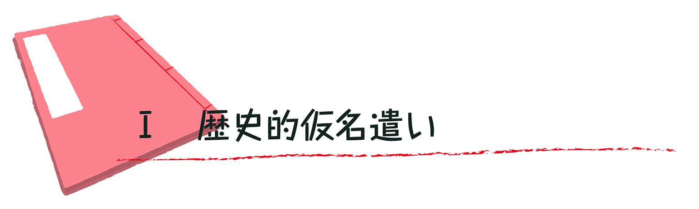
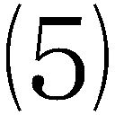
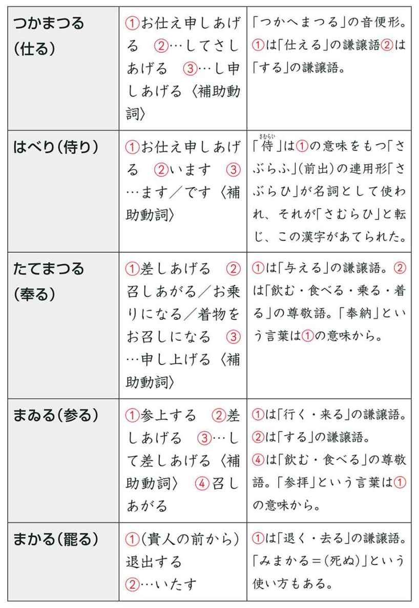
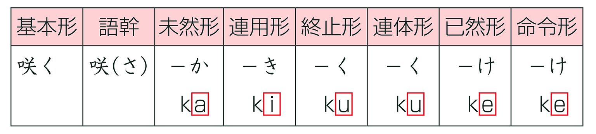
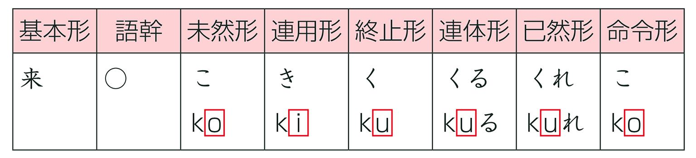
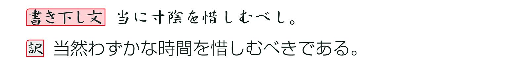
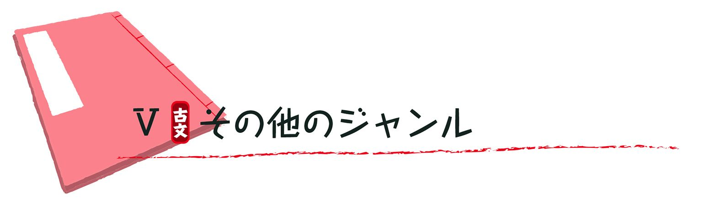
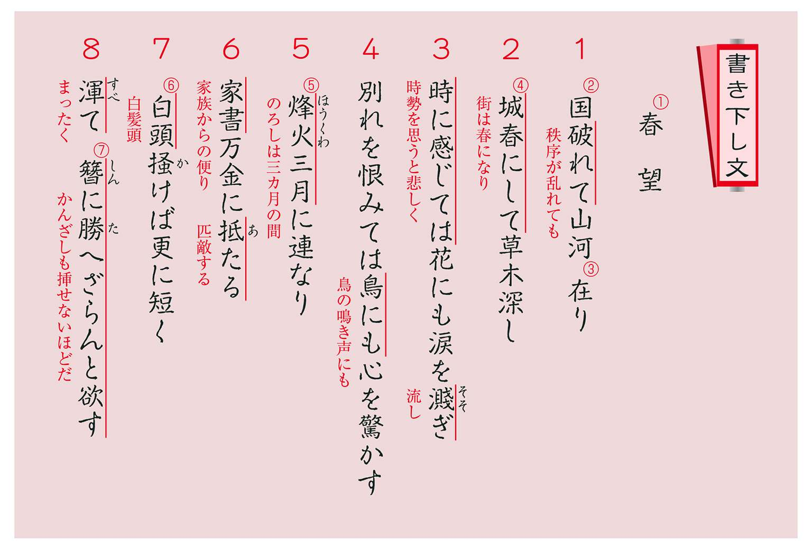

| おとなの楽習 (21) 古典のおさらい | |
| 真野 真 | |
| (2016) | |
次の文章は平安時代（11世紀）に書かれた『源氏物語』の一部です。まだ幼い紫の上（後に光源氏の妻となる人）の様子を主人公の光源氏が小柴垣の間から見ている場面です。現代の文章とどういうところが違うでしょうか？
まず気が付くのは仮名遣いです。
現代文では「おもへり」「ゐたる」「をかしう」「やうやう」という書き方をしません。現代文は原則として発音通りに表記をするので、「おもえり」「いたる」「おかしゅう」「ようよう」と書きます。
ということは、平安時代は発音と表記（文字の表し方）が違っていたの？ どうしてそんな面倒なことをしたの？ という疑問が出てくるかもしれません。
しかし、事実はまったく逆なのです。
次の章で詳しく説明しますが、平安時代には「オモフェリ」「ウィタル」「ウォカシゥー」「ヤウヤウ」のように発音していたので、文字と発音は一致していました。ところが、時代が下るにしたがって発音の方だけがどんどん変化していったので、文字（表記）が化石のように残ってしまったのです。ですから、それをそのまま（平安時代当時の発音で）朗読すると現代では意味がわからなくなってしまうのです。そこで、発音は現代風にしているのです。
もし、タイムマシンに乗って『源氏物語』の書かれた時代に行き、この文章を今われわれが読むように朗読したら、すぐには理解してもらえないでしょう。
学校で学ぶ「古典」は発音やアクセントといったことはあまり重視せずに、文法や言葉の意味を中心にして、文学的な作品の内容を「鑑賞」するということになりますね。（しかし、それでは物足りないので、この本では昔の日本語の姿について少し掘り下げて述べています。）
次に気が付くのは何と言っても言葉の意味の違いです。
「意味の違い」と言ってもいくつか種類があります。
一つ目は、「逃しつる」→「逃がしてしまったの」・「さいなまるるこそ、いとこころづきなけれ」→「責められるのは、まったく困ったことだ」・「烏などもこそ見つくれ」→「烏などが見つけたら大変だわ」などの部分です。これらは、単語の意味はだいたいわかるのに言い回し（文法）が違うことで、内容がわかりにくくなっているのです。そもそも、現代の日本語では「こそ......こころづきなけれ」や「もこそ」などという言い方はしません。また、「（雀の子は）」のように主語が省略されていたり、「と言って」というのを「とて」とだけ表現していたりするので、誰がどうしたという関係がわかりにくいという点もあるでしょう。
二つ目は、「例のこころなし」→「いつもの不注意者」・「いとこころづきなけれ」→「まったく困ったことだ」・「いづ方へかまかりぬる」→「どこに行ってしまったのかしら」のように①現代では一般的に使わない言葉と、「ゐたる」→「座っている」・「いとをかしう」→「とてもかわいらしく」の部分のように②言葉はあっても意味が異なるもの、の二通りがあって、内容がわかりにくいのです。
ここまでは、誰でも気が付くので、「古文の勉強は単語の意味と文法を覚えることだよね」と理解している人が多いのですが、実はそれだけで終わっているから古文の勉強がつまらなくなってしまうのです。
古文をおもしろく理解するための方法を前の例文でためしてみましょう。
「大人」→「中年の女房」と訳していますが、「女房」は現代語の「結婚している相手の女性＝妻（ワイフ）」のことではありません。本来は宮中などに仕える女官の部屋のことです。そこから、一般的に身分の高い人に仕える女性のことを指したのです。
「大人」は、平安時代でも成人式を済ませた社会的に一人前と認められている人を指します。だから、「おとなし」は「大人びている＝落ち着いており、思慮分別がある」という意味になります。
この文章では、幼い紫の上（というより紫の上を養っている尼）に仕えている女房たちの頭であるような中年の女性のことを意味しているのです。また、「犬君」とはまだ大人になっていない幼い召使いの呼び名です。紫の上より少し年上で遊び相手のような関係なのでしょう。ちょうど母親に兄弟のいさかいを報告するような調子で訴えているのです。
ところで、それなら「男房」はあったのか？
あったんです。宮中に局（部屋）を与えられている男子のことを指しました。一般的には蔵人（天皇のそばに仕え、宮中の行事や他の役人との連絡に当たった人）などのことを男房と言うのです。
また、「伏籠」とは伏せて上に衣服を掛けるための籠のことです。中で香をたき、その匂いを衣服にしみこませたり、中に火鉢を入れて衣服を乾かしたり、暖めたりしたものです。平安時代は貴族階級であっても毎日お風呂に入るわけではないので、体臭を消すためにも香を日常的に使っていたのです。どんな香りを付けるかでその人のセンスが決まるとも言えます。現代のフレグランスと同じですよね。そんな道具をここでは鳥籠の代わりに使っていたということになります。次の図のような形をしていました。
このように、当時の生活や宮中での役職などに関する知識を持っていると、話の奥行きが深く理解できます。
さらに、紫の上が訴える会話文では「犬君が逃しつる」と「が」が使われているのに対して、女房の方は犬君のことを「こころなし」と表現して「例のこころなしのかかるわざをして」と「の」を使っているという違いに気付きましたか？ どちらの現代語訳も「が」となっているのですが、本当は微妙にニュアンスが違うのです。
主語を表すとき、「が」は主に固有名詞や代名詞に付くのに対して、「の」は名詞一般に付きその属性や性質を表すという違いがあります。したがって、「こころなし」は形容詞「こころなし」の名詞的な用法と考えて、「うっかりさんがこのようなことをしでかして」と解釈できるのです。一方、「犬君が逃しつる」は主語をはっきり示すことで非難を込めるニュアンスが生まれ、「犬君のやつめが逃がしてしまった」と解釈できます。
このように、原文の表現にこだわることで、ふつうなら気が付かない微妙なニュアンスがわかってくるのです。
ふつうの現代語訳なら何げなく通り過ぎてしまうところを、当時の社会や日本語表現についての確かな知識と想像力でどのように訳文に反映させていくかが、翻訳者の力なのです。『源氏物語』は多くの作家が翻訳しています。
この部分を手元にある本で比べて見ると次のようになりました。
どうでしょう。微妙に味わいが違いますね。どれか気に入った翻訳はありました？
「どうして昔の文章をそのまま読むのか？」「翻訳を読めば十分じゃないのか？」中学生のとき、私はそういう疑問を持ちました。
しかし、今は「翻訳で古典の作品を読むときにも、原文と照らし合わせて読む力があると、ずっとおもしろく読めるんだよ」と当時の自分にアドバイスしてやることができます。そう思いませんか？
もくじ

どうして「お」と「を」・「え」と「ゑ」・「い」と「ゐ」があるの？
いきなりの質問ですが、古文の「五十音図」を書けますか？
次のようになっています。
※縦の列「あいうえお」「かきくけこ」などを「行」と言います。
※横の列「あかさたなはまやらわ」「いきしちにひみいりゐ」などを「段」と言います。
これをよ～く見ていると、「少し変だぞ」と思うところがありますよね。
① 「い」と「え」がア行とヤ行に同時に出てくる。
② 「う」がア行とワ行に同時に出てくる。
③ ワ行に「ゐ（ヰ）」と「ゑ（ヱ）」という見慣れない文字がある。
④ 「五十音図」と言いながら「ん」を入れると五十一音ある。
以下で、その理由を簡単に説明しましょう。
①・②について
実は、五十音図は「五音」あるいは「五音図」と呼ばれて、行という一まとまりで理解されていました。また「五音」はひらがなではなくカタカナで書かれていました。（カタカナは学僧たちが漢文の訓読〈中国語を日本語として読むこと〉の講義の内容をメモのように記すためのものが起源ですから、日本語の音を漢字音を参考にして体系的に示そうとすれば、ひらがなより学問的な意味合いのあるカタカナを使うことになったと思われます。）
五十音図をひらがなでも表し、仮名文字の一覧表として一般化したのは明治の公教育の改革以後のことです。それまでは文字の一覧表としては「いろは歌」が使われていました。したがって、辞書も江戸時代までは「いろは順」で編集されるものがほとんどでした。
そこで、いまの問いを「イ」「エ」がア行とヤ行、「ウ」がア行とワ行にあるのはどうしてか？ とカタカナに置き換え、そのうえで解説することにします。
答えはずばり、ア行の「イ」「エ」とヤ行の「イ」「エ」、ア行の「ウ」とワ行の「ウ」は同じ音だからです。同じ音だから同じ文字を使っているということです。
すると、「どうして同じ音（文字）を一覧表に入れるのか？ 50音から３音引いた47音図でもよかったのではないか？」という疑問が出てきます。47音ならば、いろは歌と同じ音数となります。
これにたいしても、ずばり「そのような（同じ音を除いた）音図が作られていました」と答えることができます。
仁和寺の寛智が著した『悉曇要集記』（1075年成立）の音図には次のようにヤ行の「イ」「エ」、ワ行の「ウ」がないばかりか、「ヲ」もありません。したがって46音で構成されています。
これは「同韻」とあることから、「行」ではなく今でいう「母音」が同じ音をまとめたもの（段）と言えそうですが、ここから以下のことがわかります。
ア行の「イ」「エ」とヤ行の「イ」「エ」、ア行の「ウ」「オ」とワ行の「ウ」「ヲ」はこの時代では同じ音と理解されていたのでこの表には一回しか載せられていない。しかし逆に言えば、ア行・ヤ行の「イ」「エ」とワ行の「ヰ」「ヱ」は別の音だったのでそれぞれ載せられている、と考えればいいでしょう。
一方、現在の五十音図の配列に近い配列の表は薬王院温泉寺の明覚（「めいかく」とも）の書いた『反音作法』（1093年成立）が始まりだと言われています。それは次のようになっています。
ヤ行とハ行の位置が現在のものと少し違いますが、５×10の50の音が示されています。しかし、同じ音であったはずの「イ」「エ」「ウ」「ヲ」が重複して載せられています。
ここで明覚は「アイウエオ」の五文字はすべての文字に共通する音の響きで、「ア」の字は「ハカヤサ」などの響きであり、「イ」の文字は「キシチニ」などの響き、「ウ」文字は「クスユなど」、「エ」文字は「ケセメ」など、「オ」文字は「コヨソ」などと同じ響きであるというのです。つまり、「アイウエオ」の行は他の行に共通する響きを表すための別格の行であると考えることができるのです。
したがって、五十音図に「イ」「エ」がア行とヤ行、「ウ」がア行とワ行にあるのは、ヤ行とワ行にア行と重複する音の文字が入ることは分かっていたけれど、それよりも日本語の発音を５音×10行の体系で示したかったからではないでしょうか。つまり、「五十音図」が初めにありき、なのです。「四七音図」では困るのです。
③について
「ゐ（ヰ）」は【wi】、「ゑ（ヱ）」は【we】と発音していていました。ア行やヤ行の「イ」は【ｉ】（前述したように同じ音です）、「エ」は【je】（ア行は【ｅ】、ヤ行は【je】と違う音でしたが五十音図が作られる少し前の10世紀後半には【je】に統一されていました）と発音していたので、発音が違いました。発音が違えば、それを表す文字も違っていたということです。（「イ・ヰ」と「エ・ヱ」の混同が一般化するのは12世紀に入って鎌倉時代以降のことです。）
そうすると「お（オ）」と「を（ヲ）」の文字が別にあるのだから、これらの音を区別していたと考えてもいいでしょう。たしかに平安時代初期までは「オ」【ｏ】と「ヲ」【wo】という区別があったのでその頃に成立した五十音図には「オ」と「ヲ」が区別されていました。ところが中期以降は混同がおこり、11世紀末には【wo】の音に統一されてしまいました。そのためア行の「オ」もワ行の「ヲ」も「汙」という文字で表した音図やア行・ワ行とも「ヲ」と記した音図が出てきます。さらに前述したようには「ヲ」の文字が含まれていない五十音図も存在します。つまり、現在の「オ」と「ヲ」の文字の区別は平安時代中期までの音の区別を反映していますが、その後の統一された音を反映していないということになります。
ちなみに、「いろは歌」には「お」と「を」の文字の違いがあるのでこの音の区別があった頃に成立したものであることがわかります。したがって「おんな」（老女）と「をんな」（成人した女性一般）、「をみな」（未婚の若い女性）といった文字遣いの違いが発音の違いを教えてくれます。
④について
もともと「ン」という発音は古代の日本語にもあったのですが、それを文字として表わすことはなかったのです。もし、どうしても、その音を表す必要があるときには便宜的に「」とか「」とかの撥ねることをあらわすチェックの符合で「ン」の音を表していました。（ひらがなの「ん」は「无」という文字から作られました。）
古文でも「あなり」「なめり」と書かれていても、それぞれ「あンなり」「なンめり」と声に出して読むことになっています。ところが平安時代の末期になって、撥音便（はねる音のこと。「飛んだ」や「噛んだ」と言う時の「ン」の音）が話し言葉のなかに盛んに出てくるようになり、その音を表す文字として「ん（ン）」が固定したのです。
つまり、「五十音図」が作られた頃には日本語の音として捉えられておらず、表記も揺れていたので、「ん（ン）」は一覧表には入っていないのです。ちなみに、「いろは歌」にも「ん」は入っていません。
どうしてこんなことにこだわって説明するのだろうと、疑問をお持ちの方もいるかもしれません。
それは、五十音図がしっかり頭に入っていないと動詞、形容詞、形容動詞、助動詞の活用がしっかりと理解できなくなってしまうからです。
江戸時代の後期に日本語の研究が盛んになり、五十音図を基礎に用言の活用の種類、助動詞の活用の在り方が明らかにされました（『詞八衢』本居春庭著などの仕事）。その考え方が現在の日本の文法理論に引き継がれています。
ヤ行は「や・ゆ・よ（ヤ・ユ・ヨ）」ではなく、
「や・い・ゆ・え・よ（ヤ・イ・ユ・エ・ヨ）」！
ワ行は「わ・ゐ・ゑ・を（ワ・ヰ・ヱ・ヲ）」ではなく、
「わ・ゐ・う・ゑ・を（ワ・ヰ・ウ・ヱ・ヲ）」！
「いろは歌」と「五十音図（あいうえお）」はどっちが先にできた？
「いろは歌」は47の仮名を一回ずつ使った七五調の歌で、以下のようになっています。きちんと、最後まで自信をもって書けますか？
※「ん」は「いろは歌」には入っていません。
最初の「色は匂へど散りぬるを」の「匂ふ」は視覚的に美しく人目に立つことの意味で現代語の嗅覚的な意味はありません。したがって、「花の色は鮮やかに映えるけれども、（いずれは）散ってしまうものなのに」という意味になります。次の「我が世誰ぞ常ならむ」は「誰ぞ～む」は反語表現で、「誰が～であろうか、そうではない」の意味ですから、「私の生きているこの世で誰がいったい変わらずにいられようか、誰でも変わっていくものだ」となります。この後の部分が実はよくわからないのですが、「有為の奥山今日越えて」の「有為の奥山」とはそのような山があるのではなく、仏教的世界観に基づくもので、「さまざまな因縁によって生じたこの世のきずなを断ちきるのが容易ではない」という意味（小松秀雄『いろは歌』講談社学術文庫）とされています。すると「断ち切りがたいさまざまな因縁で満たされたこの世を今日も越えていく（＝生きていく）人生」という意味になります。最後の「浅き夢見じ、酔ひもせず」は倒置表現で、本来は「酔ひもせず、浅き夢見じ」なのでしょうが、そのまま訳すと「はかない夢など見るまい、酔っているわけでもないのに」となります。「見じ」の「じ」は助動詞で「～するつもりはない」という〈打ち消しの意志〉の意味があります。また「酔ひ」は現代仮名遣いでは「よい」ですが、古文では「ヨイ」と発音しません。「ゑひ」と表記されている通り「エヒ（wyehi）」と平安時代には発音していたので、「いろは歌」ではそのように読むことになっています。
仏教的無常観が述べられているので、空海（弘法大師）が作ったものだとか、７音で切ってそれぞれの語句の末尾だけを読むと「いろはにほへとちりぬるをわかよたれそつねならむうゐのおくやまけふこえてあさきゆめみしゑひもせす」となり「とがなくてしす（罪なくて死す）」の暗号が秘められているとか、さまざまな話が伝わっています。しかし、「いろは歌」を記した現存する最古の資料は『金光明最勝王経音義』（1079年書写）というお経の注釈書のなかにあることから成立時期は11世紀中頃もしくは前半ではないかとされています。暗号はともかく、どうやら空海（774年～835年）の作というのは疑わしいようです。
実は同じ『金光明最勝王経音義』の中にも
ハヘホフヒ／タテトツチ／カケコクキ／サセソスシ／已上清濁不定也（以上の音は清音でも濁音でも読む）
ラレロルリ／ナネノヌニ／マメモムミ／アエオウイ／ワヱヲウヰ／ヤエヨユイ／已上清濁不替也（以上の音は清音でしか読まない）
というように清濁の区別をつけた「五十音図」が記されているのですが、段や行の順序が今の形でとは違っています。「五十音図」の現存する最古の資料は『孔雀経音義』（1004～1028年頃成立）なのですが、他の文献にある「五十音図」もこのように文字の配列が定まりません。現行のように固定するのは段の「アイウエオ」順が12世紀の初め頃、行の「アカサタナハマヤラワ」順は13世紀から多くなり、今の配列として安定したのは17世紀に入ってからです。
したがって、「いろは歌」の方が「五十音図」より成立が早いということになります。
「いろは歌」はひらがな、「五十音図」はカタカナで表記するのが基本でした。また、「いろは歌」は明治になるまで辞書などの語句の索引、子どもたちの手習歌（習字や文字を習うときのもの）として、「五十音図」よりも親しまれてきました。そのときには最後に「ん」をつけて使用しました。
「あめ つち ほし そら やま かは みね たに くも きり むろ こけ ひと いぬ うへ すゑ ゆわ さる おふせよ えのえを なれゐて」という歌もありました。意味は「天地星空山川峰谷雲霧室苔人犬上末硫黄猿生ふ為よ榎の枝を馴れ居て（汝井手という説もあります）」です。また、この歌には「えのえ」というように「え」が二回出てくることから、五十音図のところで説明をしたア行の「エ」とヤ行の「エ」の発音上の区別があった時代に作られたと考えられ、「いろは歌」より古いと考えられています。
古代の「母」はパパだった！
室町時代のなぞなぞに「ははには二たひあひたれとも、ちちには一たひもあはす（母には二度会うけれど、父には一度も会わない）」というのがあります。これは何でしょう？
答えは「唇」。どういうことかというと、この時代には「ハハ」という発音をロウソクの火を消すときの唇の形で「ファ」（両唇摩擦音）と発音していたため、「唇が二度出会う」というのが答えとして成立したのです。ですから「ハヒフヘホ」は「ファ・フィ・フゥ・フェ・フォ」と発音されていました。ところが、もっと時代をさかのぼって奈良時代になると「パ・ピ・プ・ペ・ポ」（両唇破裂音）と発音していたのです。その証拠に『古今和歌集』（905年成立）にウグイスの鳴き声を「ひとくひとく」と表記した歌があります。これをそのまま「ヒトクヒトク」と読んだのでは「ホーホケキョ」と（現代では）鳴くことになっている声とまったく一致しません。そこで「ピートクピートク（pitoku pitoku）」と読んでいたのであろうと解釈できるのです。また琉球方言の中には「はな（花）」を「パナ（pana）」と発音する例が残されているそうです。
このようなことから、奈良時代をさかのぼった時代には「母」は「パパ」と発音していたというのは間違いありません。
ということは......「日本」というのも「ニホン」ではなく「ニポン」が古来の読み方ということになりますね。「日」という漢字は、呉音では「ニチ」、漢音では「ジツ」と読むので、「ニポン」だけでなく「ジポン」とも読まれていました。奈良時代には促音（小さな「ッ」の音）はありませんでした。
※呉音＝５、６世紀頃までに朝鮮半島経由で伝わった南北朝時代の呉の地方（長江下流域）の音。仏典の読みに多い。（東京・行列・頭痛）
※漢音＝隋・唐（６世紀～９世紀）になって、都が長安・洛陽に移ってから伝えられた長安・洛陽地方の音。（京浜・孝行・頭髪）
古文の現代語での読み方は？
こんなお話ばかりしていると、「いったい古文は現代の発音でどう読めばいいのか？」と不安になるかもしれません。しかし、そもそも古文と言っても奈良時代から江戸時代まであるので、発音も時代によって変化しています。それを、その当時の発音そのままに読むことは、専門家は別として一般の人には無理です。そこで、当時の発音とは別に「古文の読み方」という特別な「読み方」があると考えてください。ですから、一般に世の中で読まれている古文の朗読は現代語的な「古文の読み方」なのです。
歴史的仮名遣いは次の六つの規則を覚えれば大丈夫
① 語頭と助詞以外の「は・ひ・ふ・へ・ほ」は「わ・い・う・え・お」と読む。
例 「あはれ」→「あわれ」 「にほひ（匂ひ）」→「におい」
「いふ（言ふ）」→「いう」 「ここのへ（九重）」→「ここのえ」
「こほり（氷）」→「こおり」
※複合語の場合は語の頭になくてもそのまま「は・ひ・ふ・へ・ほ」と読む。
例 「はつはる（初春）」→○「はつはる」×「はつわる」
「あさひ（朝日）」→○「あさひ」×「あさい」
※法則から外れる例外もある
例 「はなはだ」→○「はなはだ」×「はなわだ」
② 母音が「au／iu／eu／ou」と連続するときは「ô（オー）／yū（ユー）／yô（ヨー）／ô（オー）」と読む。
③ ①の規則→②の規則のように二段階で読むことがある。
④ 「くわ・ぐわ」は「か・が」と読む。
⑤ ワ行の「ゐ・ゑ・を」は「い・え・お」と読む。
⑥ 助詞の「なむ」、助動詞の「む」「むず」「けむ」「らむ」の「む」は「ん」と読む。
※理屈ではこのようになっていますが、ある程度古文に慣れてくれば自然に読めるものです。
さて、それでは少し練習をしてみましょう。次の言葉を声に出して読んでみてください。
⑴ やうやう白くなりゆく（しだいに白くなっていく）
⑵ くわんぜおんぼさつ（勧世音菩薩）
⑶ 登るべきやうなし（登る手段がない）
⑷ わたらむとす（行こうとする）
⑸ にほふ（鮮やかに見える）
⑹ きふのことなれば（突然のことなので）
⑺ おぼえたまふ（お思いになられる）
⑻ てふてふ（ひらひらと蜜から蜜に飛ぶ昆虫）
答え
ようようしろくなりゆく
かんぜおんぼさつ
のぼるべきようなし
 わたらんとす
わたらんとす
 におう
きゅうのことなれば
おぼえたまう（おぼえたもう）
ちょうちょう
現代語と古語とでは、同じ言葉でも意味が違う場合が多くあります。そこで、古語を現代語のように理解して読んでしまうと、とんだ間違いを犯すことになりかねません。ここでは、とくにそのような古語をとりあげて、現代語との違いや原義（もともとの意味）の説明がしてあります。楽しみながら読んでください。


現代語と比べると文語文法（古文をつくる言葉の規則）には
①動詞の活用の種類が多い。
②助動詞・助詞に現代語にないものがある。
③「係り結び」や副詞の呼応などのきまりがある。
④語句の省略が多い。
といった違いがあります。
文法は細かな規則や例外を説明するとかえってわからなくなり、古文が嫌いになる最大の原因にもなっています。そこで、ここでは古文解釈のときに説明の内容がわかる程度の大まかな説明にとどめておきます。
動詞の活用
活用形
文語の活用形は「未然形・連用形・終止形・連体形・已然形・命令形」の六つです。口語文法では「仮定形」にあたるものが文語では「已然形」となっています。「已然」という言葉の意味は「すでにそうなった」という意味ですが、文中では必ずしもその意味だけで使われるわけではありません。
古文の已然形
雨降れば、出でず。（雨が降ったので、外に出ない）
雨こそ降れ。（雨が降る）係り結びの「結び」
現代語の仮定形
（もし）雨が降れば、休みだ。
※已然形の「已」は「已」であり、「巳（み、十二支のへび）」や「己（おのれ）」ではありません！
活用の種類
「咲く」という動詞を六つの活用形にあてはめて活用させると前記のように変化します。
「咲かず」をローマ字で表記すると「sakaず」となりますが、このうち音が変化しない「さ（sa）」の部分を語幹、変化する「か（ka）」の部分を活用語尾と言います。また、活用語尾の母音の部分だけに注目すると「ａ・ｉ・ｕ・ｕ・ｅ・ｅ」となっていて五十音図の「ア・イ・ウ・エ」の四つの段を規則正しく使って変化していることがわかります。そこで、「咲く」はカ行の四つの段を使って活用変化する動詞、すなわち、「カ行四段活用動詞」と呼ぶことができます。
このようにして、すべての動詞を活用させると活用形の種類は全部で九種類となります。
※「いますかり」は「いらっしゃる」という意味の尊敬語。
つまり、①現代語ではなくなっているナ行変格活用・ラ行変格活用・上二段活用・下二段活用がある。②四段活用は現代語では五段活用になっている、という点が異なっています。
四段活用

五十音図の四段（ａ／ｉ／ｕ／ｅ）を使っているので、四段活用。
ナ行変格活用
ナ行の四段（ａ／ｉ／ｕ／ｅ）を使ってはいますが、四段動詞「咲く」のようにka・ki・ku・ku・ke・keといった規則的な変化をしていないので「変格（＝本来の規則に合っていないこと）」と名づけられています。
ラ行変格活用

ラ行の四段（ａ／ｉ／ｕ／ｅ）を使っていますが、規則的な変化をしていないので「変格」と名づけられています。
カ行変格活用

カ行の三段（ｏ／ｉ／ｕ）を使っているので「三段活用」と言いたいところですが、サ行変格活用（ｅ／ｉ／ｕの三段を使う）と区別をするために、「カ行変格活用」と名づけられています。
※古文では「来」で一語です。現代語のように終止形は「来る」ではありません。
サ行変格活用
サ行の三段（ｅ／ｉ／ｕ）を使っているので「三段活用」と言いたいところですが、カ行変格活用（ｏ／ｉ／ｕの三段を使う）と区別するため、「サ行変格活用」と名づけられています。
※古文では「す」で一語です。現代語のように終止形は「する」ではありません。また漢語に付いた複合動詞（例＝死＋す＝死す・愛＋す＝愛す・念＋す＝念ず）もサ行変格活用です。
下一段活用 上一段活用
「蹴る」は五十音図の中心にある「ｕ」の段から下にある「ｅ」の一段のみを、「着る」は上にある「ｉ」の一段のみを使って活用しているので、「下一段」「上一段」と名づけられています。
下二段活用 上二段活用

「憂ふ」は五十音図の中心にある「ｕ」とその下にある「ｅ」の段の二つの段を使っているので「下二段」、「恋ふ」は「ｕ」とその上にある段の二つの段を使っているので「上二段」と名づけられています。
助動詞の意味
助動詞は種類が多く、そのうえ複雑な活用をするので、丁寧に説明すればかえって混乱しかねません。そこで、ここではよく使われる助動詞の終止形と意味だけに絞って説明をします。あとは実際の文章を読みながら理解していけばいいでしょう。
※日本語の文法では助動詞の意味を「否定」と言わずに「打（ち）消（し）」と言います。
「花咲きけり。」という文を文法的に説明すると次のようになります。
花 ＝名詞
咲き＝カ行四段動詞「咲く」の連用形
けり＝過去の助動詞「けり」の終止形
このような言い方で言葉を説明することがあるので覚えておくと便利です。これを「品詞分解」と言います。
「及ばざりき。」は
及ば＝バ行四段活用動詞「及ぶ」の未然形
ざり＝打消の助動詞「ず」の連用形
き ＝過去の助動詞「き」の終止形
となります。
副詞の呼応
「副詞の呼応」とは副詞と決まった言い方がセットで使われることで主に打消や禁止の意味を表すものです。これを知っていると古文の解釈がとても楽にできます。
係り結び
古文でも普通の文は終止形で終わります（会話文のときは命令形もあります）。ところが、係助詞「ぞ・なむ・や・か」があると連体形、「こそ」があると已然形で終わり、文末が終止形にならないのです。これを「係り結び（係り結びの法則）」と言います。
そもそも「係助詞」とは、この言葉があると一定の終わり方（＝結び方）を要求して文の下に係っていくという意味からつけられたものなのです。ですから、終止形で終わるのが原則の現代語には係助詞はありません。「係り結び」は平安時代から歌をつくる人たちの間でなんとなく意識されていましたが、江戸時代の終わり頃に本居宣長が平安時代の文章を研究して『詞の玉緒』で体系的に説明しました。
係り結びは強意・反語・疑問を表すものなので現代語にそのまま訳すことはできません。古文を原文で読む醍醐味はこの係り結びで表しているニュアンスを感じることにあると言ってもいいでしょう。
例 隆家こそいみじき（扇の）骨は得て侍れ。
「こそ」の前にある文節。この場合は「隆家」を取り立てて強調しています。そのニュアンスを生かして口語訳すると以下のようになります。（※「侍れ」は已然形です。終止形は「侍り」です。）
例 何ぞ用はある。
「ぞ」が疑問副詞の「何」と同時に使われて「定かではない」の意味を表しています。このニュアンスを生かして口語訳すると以下のようになります。（※「ある」は連体形です。古文では終止形は「あり」です。）
 語の識別
語の識別
いきなり問題です。次の問いに答えてください。
１ 次の二つの「なり」のちがいを説明しなさい。
① 「鐘の音あはれなり。」
② 「鐘が鳴るなり。」
２ 「夜は明けぬ。」とは、「夜は明けて、朝になった」のかそれとも「まだ夜は明けていない」ことなのか。どちらですか？
３ 次の①～③のなかで係り結びの法則を含むものはどれですか？
① 雀の子を犬君が逃しつる。（雀の子を犬君が逃がしてしまったの。）
② かくかたき事をばいかに申さむ。（こんな難しいことをどうして申せましょうか。）
③ 何をか奉らむ。（何を差しあげましょうか。）
答え
１ ①は形容動詞「あはれなり」の活用語尾。②は伝聞推定の助動詞「なり」の終止形。したがって、①「鐘の音がしみじみとした趣がある。」、②「鐘が鳴っているようだ。」という口語訳になります。
２ 「夜は明けて、朝になった」の意味です。「明けぬ」の「明け」は四段動詞「明く」の連用形です。連用形に接続するのは完了の助動詞「ぬ」なので「明けた」という意味になります。「明けない」は「明かぬ（「明く」の未然形＋打消の助動詞「ず」の連体形）」と言います。
３ ③です。「か...む（助動詞「む」の連体形）」となっています。①も②も連体形で終わっていますが、①は連体止め、②は「いかに」という疑問詞と呼応しています。
...とこんなふうに説明されてもさっぱりわからない。だから、古典は嫌いだ!! という声が聞こえてきます。
こんなことを大学受験生は一生懸命勉強しているのか、となんとなく思っていただければ十分です。あまり考え込まずに読み進めてください。その都度、説明をしていきます。
いうまでもなく、「読書」という熟語は「ドクショ」と読みます。これはそれぞれの漢字を当時の中国の発音に近い音（「ドク」は呉音〈呉の地方の中国語の発音〉、「ショ」は漢音〈長安や洛陽地方の中国語の発音〉）で読んだ「音読み」です。いわば、古代の中国語をそのまま発音しているのです。
ところが一方で、私たちはこの熟語を〈書（＝本）を読む〉と自然に理解して、それを疑うことをしません。それぞれの漢字を訓読み（日本語の意味で読むこと）すれば「読」は「よ（む）」、「書」は「か（く）」となり、「読み書き」となりますが、これでは〈本を読む〉の意味にはなりません。ですから、「読書」＝〈本を読む〉というときには「書」は名詞、「読」は動詞として区別し、下にある「書」を目的語として「書ヲ」と先に読み、そのあとで「読ム」と理解（訓読）しているということになります。
つまり、中国の言葉を表すために作られた文（漢文・白文）を音読み、訓読みを使い分け、語順を日本語風に変え、助詞・助動詞・活用語尾を補って、そのまま日本語として理解するというわざをしているのです。いわば、外国語である中国語を「翻訳」せず、そのまま日本語として読んでいると言ってもいいでしょう。こんなことをしている国はほかにありません。おそらく、古代日本において短期間のうちに中国の文化を吸収する必要に迫られ、本格的な語学の研究をするのを抜きにしていきなり原文から内容をつかみとる窮余の策であったのかもしれません。
しかし、このような読み方が定着してくるにしたがって、日本語の表現もそれに影響されて変化してくることになりました。なんといっても漢語が文章の中心にあるわけですから、抽象的な内容を力強く、簡潔に表現することができるようになったのです。
このようにして、漢文訓読は日本語に大きな影響を与えています。国語という教科なのに「古典」として古代の中国語を読むのは、現代語を理解するには漢文の知識も不可欠と考えられているからでしょう。実際、私たちが日常的に使う「矛盾」や「蛇足」あるいは「漁夫の利」といった言葉は漢文から来ているのです。
・漢文とは、主に古代中国において文語体で書かれた文章のこと。
・白文とは、漢字だけで書かれた原文のこと。
・訓読とは、漢文を日本語の文法・語順にしたがって日本語の文章のように読むこと。
・訓読文とは、訓読した文のこと。具体的には白文に訓点（返り点・送りがな・句読点）などの符号を付けて読み方を示したもの。
・書き下し文とは、訓読文を漢字とひらがなを使って書き改めたもの。「漢字仮名交じり文」ともいう。
・口語訳とは、書き下し文の内容を現代語にしたもの。
送りがな
漢文を日本語として読むために活用語尾・助詞・助動詞を補うもの。次の規則があります。
１ 漢字の右下にカタカナで小さく書く。
２ 文語文法の規則にしたがう。
３ 歴史的仮名遣いで付ける。
（例：蝶舞フ）
４ 文意により必要な助詞・助動詞・活用語尾を補う。
（例：孔子ハ聖人ナリ）
５ 副詞や接続詞は最後の一字を送る。
（例：既ニ、故ニ）
返り点
漢文を日本語の語順に合わせて読む（訓読する）ために、読む順序を示した記号のこと。漢字の左下に小さく付けます。
０ 記号無し
・何も記号が付いていなければ上の字から順に下に読む。
１ レ点
・下の字からすぐ上の字に返る記号。
・レ点が連続する場合には一つずつ上へ返る。
※「不」は打消の助動詞「ず」と読み、ひらがなで示す。
２ 一・二点
・二字以上離れた上の字に返る記号。

・必要に応じて一・二・三...を用いることもある。
３ 上・下点
・一・二点の句をはさんで返る記号。
・必要に応じて上・中・下点を用いることもある。
４ 甲・乙・丙点
・一・二点、上・下点をはさんで返る記号。
・あまり使われることはない。
５・・点
・「レ点」と他の返り点を同時に用いるときに使う記号。
再読文字
「再読文字」とは訓読するときに一字を二度読む文字のことです。主に次の文字があります。再読文字は最初に読むときの送りがなを右下に、二回目に読むときのものは左下に送ります。

未＝いまダ～ず（まだ～ない）
将・且＝まさニ～ントす（今にも～しようとする）
当＝まさニ～べシ（当然～べきである）
応＝まさニ～べシ（おそらく～だろう）
宜＝よろシク～べシ（～するのがよい）
須＝すべかラク～べシ（ぜひ～する必要がある）
猶＝なホ～ごとシ（ちょうど～のようなものだ）
盍＝なんゾ～ざル（どうして～しないのか）
書き下し文
漢文を訓読のきまりにしたがって漢字仮名交じり文に改めたもののこと。次のようなきまりがあります。
１ 日本語の助詞・助動詞に当たる漢字はひらがなにし、動詞・名詞・副詞などの自立語は漢字のままで書く。
２ 訓読しない漢字は書き下し文には書かない。
「訓読しない漢字」とは、中国語では発音したが日本語としては読むことはしない、前置詞や強意のような働きをするもの。「置き字」といわれる。
返り点にしたがって読む順序を□の中に数字で書いてください。
白文に書き下し文を参考にして返り点と送り仮名を付けてください。
漢文を書き下し文にしてください。
主な句法
漢文を訓読するときには英語の構文のように決まった読み方があります。これを知っていると漢文の理解が一層深まるはずです。そのうちの代表的ないくつかを紹介しておきます。
１ 使役形＝他の誰かに何かをさせるという意味を表す。
２ 受身形＝他からの動作・作用を受ける意味を表す。
３ 否定形＝動作や様態を様々なニュアンスで打ち消す意味を表す。
① 単純な否定
② 二重否定 （否定の語を二つ重ねて結果として強い肯定を表す。）
③ 部分否定 （否定語＋副詞のセットで、副詞部分を修飾的に否定する意味を表す。）
④ 全部否定 （副詞＋否定語のセットで副詞の修飾する文全部を否定する意味を表す。）

４ 疑問形＝疑問副詞などを使い相手に問いかける意味を表す。
５ 反語形＝表現上は疑問形だが内容は反対の意味を表す。文脈で判断する）
６ 抑揚形＝前の文を抑えて程度の低いものを述べ、後にくる文を揚げて強める表現の仕方。
漢詩とは主に古代の中国の人々が書いた詩で、春秋戦国時代前８世紀～前３世紀から始まり唐の時代７世紀～10世紀に最盛期を迎えたものを言います。日本の文学にも大きな影響を与えています。
漢詩は大きく唐代以前に成立した「古体詩」と唐代以降の「近体詩」とに分けられています。古体詩は一句の字数は決まっていても句数・押韻は不定で自由な形式の詩形です。一方、近体詩は厳密なきまりにしたがって作られています。「古典」で学ぶのはほとんどが近体詩なので、ここでは近体詩のきまりと技法について説明します。

・「言」とは一句の文字数のことです。「絶句」とは四句、「律詩」とは八句で作られているものです。
・「押韻」とは一定の箇所に同じ韻（漢字の音のうち初めの子音部分を除いた残りの部分）を置くことで、中国語として声に出して読むときに音の響きの美しさをねらうもの。訓読するときは関係がありません。
・絶句は意味の上で起・承・転・結という展開をします。
・律詩は二句（奇数句と偶数句）ごとにまとまった内容になっており、それぞれのまとまりを首聯・頷聯・頸聯・尾聯という構成をしています。また第三句と第四句・第五句と第六句がそれぞれ対句になっています。
・「対句」とは文法構造が一致し、互いに対応する二つの句を並べ、相対する語に対照的な意味をもたせる表現方法です。
平安時代の終わり頃になると、貴族社会が衰退し、雅やかな宮廷生活を描く文学に陰りがみえてきました。それに代わったのが「説話集」です。以前から仏教の教えや不思議な力をわかりやすく人々に伝える「仏教説話集」がありましたが、素朴な民衆の生活や生活感情を題材にした話を集めた「世俗説話集」がこの時代にさかんにつくられました。登場人物は貴族から武士、庶民、盗賊、天狗、鬼まで実に多彩で、当時の人々の暮らしぶりがよくわかります。
現代の生活感覚と共通する部分も多く、「古文」のおさらいの手はじめとして楽しく読めると思います。
『沙石集』巻八
小坊主さんは知恵者（一休さんのトンチ話や狂言のネタ）
ある山寺にいた坊主で、けちな人が、飴を作って、ただ一人で食っていた。十分に管理して（食べたら）、棚にそのつど置いていたが、（山寺に）一人いた小坊主には食べさせないで、「これは、人が食べてしまうと、死んでしまう物だぞ」と言っていたけれど、この小坊主は（以前から）食べたいと思っていたところ、坊主がよそに（用事で）行ったすきに、棚から下ろしたときに、飴をこぼして、小袖にも髪にもつけてしまった。（小坊主は飴を）ふだんから、食べたいと思っていたので、二杯、三杯と十分に食べて、（その後は）坊主の大切にしまっておいた水瓶を、雨垂れを受ける石に打ちつけて、割っておいた。
坊主が帰ったところ、この小坊主がさめざめと泣いている。（坊主が）「何で泣いているのか」と尋ねたところ、「大切な水瓶を、過って割ってしまいましたので、（お坊様から）どのようなお叱りがあるだろうかと（自分のしたことを）悔やんで、命があってもしかたがないと思って、『人が食べれば死ぬ』とおっしゃった物を、一杯食べても死なず、二杯、三杯まで食べましたけれど、まったく死にません。最後には、小袖につけたり、髪につけたりしましたけれど、まだ死にません」と言った。
飴は食べられ、水瓶は割られてしまった。けちな坊主は、何も得るところがない。小坊主の知恵は、大変なものである。（きっと）学問の才能も、劣っていないだろう。
①ある山寺の坊主、慳貪なりけるが
「ある山寺の坊主」と「慳貪なりける」は同格の関係です。つまり、同じ人物のことをそれぞれ違った表現で説明しているのです。ですから、「ある山寺の坊主がけちであった」という意味ではありません。少ししつこい表現でここを口語訳すれば、「ある山寺の坊主で、けちであった坊主が」ということになります。
②飴
お話の内容から、どうやらこの「飴」はドロップのような固い飴ではなく、どろ～と溶けた水飴でしょう。鎌倉時代には、まだ甘いものは貴重品でした。
③主語・目的語が省略された箇所
口語訳には煩雑にならない程度にそれらを補ってあります。古文ではこのように省略が多いので人物と行動を取り違えないように気を付ける必要があります。
④あらんずらん
もともとは「あらむずらむ」で「あら（動詞）＋むず（推量の助動詞）＋らむ（現在推量の助動詞）」＝「きっとあることだろう」という強意のニュアンスをこめた推量の意味です。「むず」は、鎌倉時代以後さかんに使われるようになった助動詞です。推量の助動詞「む」とほとんど同じ意味ですが、強意のニュアンスがあるのです。また、この時代は撥音便で「む」を「ン」と読むことが多くなり、「む」の部分を「ん」と表記するようになりました。たしかに「あらンずらン」と言ったほうがリズムが生まれ、強調している感じがしますね。
⑤とぞ言ひける
ぞ～けるの部分が係り結びです。小坊主の言葉を強調しているのです。
「附子」（狂言の演目）
狂言の「附子」という作品では外出することになった主人が太郎冠者と次郎冠者に「附子という毒は吹く風にあたっただけでも死ぬから気を付けよ」と言いつけて出かけますが、二人は好奇心から近づき、それが甘い砂糖であることに気付いて食べてしまいます。そのあとで、言い訳のために主人の大切な茶碗と掛け軸を壊すというものです。狂言の方がドラマとして楽しめるものになっています。
『沙石集』
鎌倉時代後期の仏教説話集で十巻で構成されています。無住（1226～1312）が編纂。仏教教義や法話に自分が実際に見聞きした事件、庶民の間に伝わる説話や笑い話を加えて一つの作品としています。仏教説話でありながら堅苦しい話が少なく、庶民的な話が多いので後世にも広く読まれました。
「宇治拾遺物語」（第104話）
仏を射た猟師（冷静な判断力をもつ男の話）
昔、愛宕の山に、長らく修行している聖がいた。長年修行して、（住まいにしている）僧坊を出ることがない。（この山の）西の方に猟師がいる。この聖を尊敬して、いつも（寺に）参拝して、品物を献上するなどしていた。しばらくお参りしなかったので、（今回は特に）餌袋に干飯など（の食べ物）を入れて参上した。聖は喜んで、日頃の気がかりだったこと（猟師の訪れがなかったこと）などをおっしゃる。そのうちに、（聖は猟師に）にじり寄っておっしゃるのには、「近頃、とても尊いことがある。ここ数年、他に気をとられることなく（法華経を）読経申しあげたご利益だろうか、ここのところ毎晩、普賢菩薩が、象に乗って見えなさる。今夜は（ここに）とどまって拝みなさい」と言ったので、この猟師は、「まことに尊いことでございますね。それならば、（今晩はここに）泊まって拝み申しあげましょう」と言って、（そこに）残った。
［中略］
九月二十日のことなので、夜も長い。今か今かと待っていると、夜中も過ぎてしまったと思う頃に、東の山の峰から、月が出るように見えて、峰を吹き下ろす風も荒々しいところに、この坊の中が光が差し込んだように、明るくなった。見ると、普賢菩薩が白い象に乗っておもむろにおいでになり、坊の前にお立ちになった。
［中略］
猟師が思うには、「聖は長年法華経を（身体から離さずに）もち、読んでいらっしゃるからこそ、その目にだけ（菩薩は）見えなさるのだろう、（しかし、）この小坊主や自分などはお経の（縦横の）向きもわからないのに、（菩薩が）見えなさるのは、納得できないことだ」と心の中で思って、このこと（の真偽）をためしてみよう、これは決して罪になることではないと思って、とがり矢を、弓につがえて、聖が拝んでいる上から、弓を強く引いて、ひょうと射たところ（菩薩の）胸のあたりに当たったようで、火をぱっと消すように光もなくなった。谷の方へごろごろと大きな音がして逃げて行く音がする。
聖は、「これはどうなさったのだ」と言って、泣き騒ぐことこの上もない。男が申すには、「聖の目に（菩薩が）現われなさるのはもっともなことです。（しかし）自分ごとき（殺生を仕事とする）罪深い者の目に（菩薩が）現われなさったので、確かめ申そうと思って（矢を）射たのです。本当の仏ならば、よもや矢は（仏のお体に）立ちますまい。（ところが）立ったのですから（あれは）怪しいものです」と言った。
夜が明けて、血の跡をつけて行って見たところ、一町（約１１０メートル）ほど行って、谷の底に、大きな狸が、胸からとがり矢を射通されて死んでたおれていた。
聖であっても、無知なので、このように化かされたのである。（一方）猟師であるけれど、思慮があったので、狸を射殺して、その化けの皮をはいで（正体を）あきらかにしたのである。
①おこなふ
古文では「実行する・実施する」という意味より「仏道修行をする・勤行をする」という意味で使うことのほうが多いです。
②聖
徳の高い僧のことですが、大寺院や教団に属さないで修行に専念する僧のことをとくにこのように呼びます。
③餌袋に干飯など入れて
「餌袋」とはもともと鷹狩りに使う鷹のエサを入れる袋でしたが、後には人の食料を入れて携えるもののことになりました。弁当袋のことです。「干飯」とは炊いた飯を干して携帯用、保存用にしたもの。水や湯で戻して食べます。インスタントライスですね。
④普賢菩薩
釈迦如来の向かって右側に位置し、白象に乗っています。法華経というお経を信仰する者を守ると言われています。ちなみに釈迦如来の右側に位置するのは文殊菩薩で獅子に乗っています。
⑤とがり矢
矢じりが鋭くとがった矢のこと。羽を四方につけてあります。
⑥わが罪深き者
猟師は鳥獣を捕まえ、殺すことを仕事としています。仏の教えからすれば実に罪深いことになります。しかし、生きていくためにはそれをやめるわけにはいきません。この猟師はその罪を自覚して、聖を援助することで救われたいと思っていたのではないでしょうか。
⑦猟師なれども、おもんぱかりありければ
罪深きなりわいの猟師であるけれど思慮があったというのです。聖がまんまと狸にだまされているのに、猟師は自分のような者に仏が見えるはずがないと、実に合理的、冷静に判断しています。自己を見つめる目は他にも向かっているのです。一方、修行に専念することで慢心がきざし、ご利益を期待して狸なんぞにだまされたのが聖でしょう。
平安時代が終わり、新しい時代を作っていったのは、ここに登場した知恵や現実的な判断力をもった猟師や前の話の小坊主のような人たちでしょう。
『宇治拾遺物語』
鎌倉時代前期の世俗説話集。15巻・197話を収めています。編者は不明。多彩な話題が天竺（インド）・震旦（中国）・本朝（日本）にわたり、何らかの連想ないし関連のある配列によって自由多様に変化しつつ展開されています。事実を正確に記録するとか、啓蒙につとめるなどの意識よりも興味におもむくままに説話が集められています。
編者は多くの出典の中から説話を採録するだけではなく、口がたりを聞き書きし、それを滑稽で愚かしい人間の行動として暖かい目で描き出しているようです。「こぶとりじいさん」「ちごのかひもち」などよく知られている説話もこの中にあります。

はっきりした主題や構成をもたずに身の回りに起きたこと、毎日の生活の中で考えたり、感じたことを書きつづるというのが随筆です。英語の「essay」に近いものです。内容は紀行的なもの、学問的・思索的なもの、記録的なものなど多岐にわたりますが、いずれも直観的表現によって作者の個性が告白的に表れている点は共通します。ここでは、日本の代表的随筆を二つとりあげて、人間や自然に向けられた観察を通して個性的なものの見方・感じ方を味わってみたいと思います。
枕草子
春って曙よ！（『枕草子』の有名な第一段）
春はあけぼの（がいい）。だんだん白くなっていく山ぎわが、少し明るくなって、紫がかった雲がたなびいている（のがいい）。
夏は夜（がいい）。月の明るい頃は言うまでもない。（月の出ない）闇の夜もやはり、蛍がたくさん飛びかっている（のがいい）。また、ただ一つ二つと、ほのかに光って（飛んで）いくのもおもしろい。雨などが降る夜もおもしろい。
秋は夕暮れ（がいい）。夕日がさして山の端にたいそう近くなった頃に、烏がねぐらに行こうとして、三つ四つ、二つ三つなど（の群れ）になって飛びいそぐ様子までがしみじみとした趣がある。まして雁などの連なっているのが、たいへん小さく見えるのは、とても趣がある。日がすっかり沈んでしまって、風の音や虫の音など（が聞こえてくるの）は言いようのない（ほど趣がある）。
冬は早朝（がいい）。雪の降った朝は言うまでもない、霜が（降りて地面が）白くなっているときも、またそうでなくてもたいそう寒い朝に、火を急いでおこして、炭を（あちらこちらへ）持ち運ぶ様子も、いかにも（冬の朝らしく）似つかわしい。昼になって、寒気がゆるんでくると、火桶の火も、白い灰が多くなってきてよくない。
①山ぎは・山の端
「山ぎは」は空の山に接している部分。「山の端」は山の空に接している部分。前者は空、後者は山、という違いがあります。イラストで示すとこんな感じです。
②紫
現代の紫色と比べるとずっと赤みを帯びた「古代紫」のこと。この当時、紫はもっとも高貴な色とされていました。このあたりの描写はとても色彩感があり絵画的ですね。
③をかし・あはれなり
第２章の「古文の基礎」古文単語でも述べましたが、「をかし」は知的なおもしろさを表し、客観的で明るい感じをもって使われます。それに比べると「あはれなり」は内省的で、深く心を動かされたときの感情を表します。『枕草子』は「をかしの文学」、『源氏物語』は「あはれの文学」などと評され、どちらの言葉も平安時代文学のキーワードと言えます。
④雨など降る
「雨などが降る（夜）」という意味ですが、それでは「雨」以外に何が降るのか、などと突っ込んではいけません。現代語でも「昨日、雨とか降ってさあ～」と言いますね。それと同じです。そのとき「他に何か降ってたの？」と尋ねたら確実に嫌われます。これらは婉曲法と言ってダイレクトに述べるのではなく、少し遠まわしにソフトに表現するものです。また、ここは「雨が降る夜に蛍が飛ぶ」情景ではなく、一般的な「雨の降る夜」と解釈されています。
⑤近うなりたる
「近くなり」＝「tikakunari」の「k」という子音を省略すると「tikaunari」となります。そうすると、発音の法則からして（参照）「オー」と読みますが、このようにウ段の子音が消える現象を「ウ音便」と言います。
⑥火桶
持ち運びできる丸い火鉢で、桐などの木をくりぬいて作られています。
⑦わろし
「あし→わろし→よろし→よし」の順に良くなっていきます。ここでの「わろし」は「をかし」と反対の意味で使われています。
桃尻語訳
『枕草子』には、作家の橋本治が「桃尻語訳」として現代の女子高生の言葉（とは言うものの、刊行されたのが1987年ですから、いささか古めでありますが）で訳した有名な口語訳があります。この段の口語訳を次に載せました。ぜひ、読み比べてください。
春って曙よ！
だんだん白くなってく山の上の空が少し明るくなって、紫っぽい雲がたなびいてんの！
夏は夜よね。
月の頃はモチロン！
闇夜もねエ......。
蛍が一杯飛びかってるの。
あと、ホントに一つか二つなんかが、ぼんやりボーッと光ってくのも素敵。雨なんか降るのも素敵ね。
秋は夕暮れね。
夕日がさして、山の端にすごーく近くなったとこにさ、烏が寝るところに帰るんで、三つ四つ、二つ三つなんか、飛び急いでくのさえいいのよ。ま・し・て・よね。雁なんかのつながったのがすっごく小さくみえるのは、すっごく素敵！ 日が沈みきっちゃって、風の音や虫の声なんか、もう.........たまんないわねッ！
冬は早朝よ。雪が降ったのなんかたまんないわ！
霜がすんごく白いのも。
あと、そうじゃなくても、すっごく寒いんで火なんか急いでおこして、炭の火持って歩いていくのも、すっごく〝らしい〟の。昼になってさ、あったかくダレてけばさ、火鉢の火だって白いばっかになって、ダサイのッ！
（橋本治『桃尻語訳 枕草子（上）』河出書房新社）
今の時代でもありそうな...（すさまじきもの＝興ざめなもの）
地方官任官の除目で官職を得られない人の家。今年は必ず（任官される）と聞いて、以前から（この家に仕えて）いて（今は）他に仕えている者や、田舎の方に住んでいる者などが、たくさん集まって来て、出入りする牛車の轅も（割り込む）すき間がなく見え、（任官を祈り）参拝する（その家の主人の）供にと、我も我もと参りお仕えし、物を食い、酒を飲み、大声で騒ぎ合っているのに、（徐目が）終わる明け方まで、（知らせの者が）門をたたく音もしない、変だなあと耳を立てて聞いていると、先払いの声々がして上達部などはみな（宮中から）おでましになった。様子を聞きに、（前日の）宵の頃から（出かけて）寒がり震えて（待って）いた下男がとてもつらそうに歩いてくるのを、（家にいて）見ている者たちは（徐目の結果を）問うこともできない。よそから訪れた者が、「御主人は何におなりになった（任官された）のか」などと尋ねるが、返事には「前のどこどこの国司です」と必ず返事をする。本当に（主人の任官を）頼みにしていた者は、とても嘆かわしいことだと思って（落胆して）いた。
翌朝になって、すき間なくつめかけていた者たちも、一人二人こっそりと抜け出していってしまう。古くから仕えている者たちで、そうもいかないであろう者たちは、（早くも）来年の（欠員になる）国々を、指を折って数えるなどして、身体をゆすって歩きまわっているのも、とても気の毒で興ざめなことだ。
①除目
役人の人事異動の行事。春と秋にあり、春は「県召の除目」で地方官の任命、秋は「司召の除目」で中央の役人の任命をします。この話では春の除目を指しています。
②車の轅
「車」とは牛に引かせる車、「牛車」のことです。馬車はなかったようです。轅はその車を牛につなぐ前の棒の部分のことです。イラストを見てください。ちなみに牛車は「ぎっしゃ」と読みます。「うしぐるま」などと読むとなんだか、品がなくなりますね。牛車は後ろの方から乗って、前から降ります。
③前駆追ふ声々
身分が高い人が外を牛車に乗って通るときには警護の者が「警蹕」と言って「おーしい、おーしい」と声をあげて先払いをしたのです。今でも、神社の祭礼などでは神主さんが神様のお通りになるのをこのような声をあげて先払いする行事が残っています。
④上達部
大臣・大納言・中納言・参議および三位以上の階級の人のこと。ということは、かなり身分の高いＶＩＰのことです。
⑤え問ひにだにも問はず
「え問ひにだにも問はず」は「え（副詞）＋問ひ（動詞）＋に（格助詞）＋だに（副助詞）＋も（係助詞）＋問は（動詞）＋ず（助動詞）」と文法的には分解できます。「え...ず」で「...できない」という意味になりますから、しつこく訳すと「どうだったと問うことさえも問うことができない」となります。結果はわかっているから尋ねる勇気もでない、というニュアンスです。
⑥前司
「先の国司」という意味。正直にだめだったと言えないからこのような言い方をしています。「前」は現在より一つ前、「元」は以前したことがあるという違いがあります。現在でも、「元総理大臣」と言えば何年前だろうが「総理大臣経験者」であり、「前総理大臣」と言えば、「今の総理大臣の前にその役職にあった人」という意味です。
⑦すさまじげなり
期待が膨らみ人々が大騒ぎをし、一転してそれがかなわなかったときの失望や空虚感が描かれています。現代でも選挙開票や合格発表でうまくいかなかったときはこんなことがありそうですね。鋭く人間を観察しています。
『枕草子』
平安時代中期の11世紀初めに書かれました。約300の章段からなり、宮中での出来事や体験、生活や自然に対する思いが感性豊かに述べられています。作者は清少納言。父は歌人として有名な清原元輔。藤原道隆の娘で一条天皇の中宮となり後に皇后になった定子に仕えました。『源氏物語』の作者紫式部は同じく一条天皇の中宮である藤原道長の娘彰子に仕えました。したがって、清少納言と紫式部は同時代に生きたいわばライバル同士でした。
一条天皇は彰子を中宮とするために定子を皇后としました。つまり、この時代には中宮も皇后も同資格の后＝天皇の正妻とされたのです。
徒然草
つれづれなるままに...（『徒然草』の超有名な冒頭）
手持ち無沙汰で退屈なままに、一日じゅう、硯に向かって、心に映って（は消え、消えては映って）いくどうでもよいことを、とりとめもなく書きつけていると、奇妙に気持ちが高ぶってくるものだ。
前述の口語訳とは別に、先の桃尻語訳をまねて筆者も「超訳」をしてみました。どうか皆さんも、自分の「超訳」を作ってみてください。
何もすることがなく、なんとなくミスティーな日に心に浮かんでは消えていくことを思いつくままに書いてみたら、妙にテンションが高くなったよ。（それで、いくつかの文章ができてしまった。それを集めたのがこの本なので、そんなにマジになって読まないでくださいね。）

①こそものぐるほしけれ
「こそ」は文末に係って、本来は「ものぐるほし」となるのを已然形の「ものぐるほしけれ」にしています。これは係り結びです。強調しています。気を付けなければならないのはこそ...けれではないことです。こそ...ものぐるほしけれです。「ものぐるほしけれ」は形容詞であり、これで一つの単語です。漢字で書くと終止形は「物狂ほし」。何となくイメージがわいてきましたか？
やっぱ、案内者は必要ですよね（仁和寺の法師の失敗）
仁和寺にいる法師が、年をとるまで石清水八幡宮を拝んだことがなかったので、残念に思って、あるとき思い立って、たった一人徒歩でお参りに行った。（山のふもとにある）極楽寺や高良を拝んで、（石清水八幡宮は）これだけだと思い込んで帰ってきた。そうして、仲間の人に会って言うことには、「長年思っていたことを、果たしましたよ。（石清水八幡宮は噂に）聞いていたよりもずっと尊くいらっしゃった。それにしても、参拝する人々がみな山に登ったのは、何があったのだろう。（私も）知りたかったのですが、（石清水の）神様にお参りするのが本来の目的だと思って、山の上までは見ませんでした」と言ったのでした。
ああ、ちょっとしたことにも、その道の案内者はあってほしいものだ。
①石清水
京都府八幡市の男山にある石清水八幡宮。そのふもとに極楽寺と高良神社があります。
②こそおはしけれ
「こそおわしけれ」が係り結びです。「けれ」は「けり」の已然形。
③こそ本意なれ
「こそ本意なれ」が係り結びです。「なれ」は「なり」の已然形。
④ぞ言ひける
「ぞ言ひける」が係り結びです。「ける」は「けり」の連体形。
⑤少しのことにも、先達はあらまほしき事なり
「先達」は「せんだつ」あるいは「せんだち」と読みます。このように、話の終わりに時々、教訓めいたことが書いてあるのが『徒然草』の特徴です。しかし、それはこの段だけ読むからなので、全文を読み通してみると逆に堅苦しい思想や教訓がユーモラスなこぼれ話で具体化されているように感じられます。冒頭の段を「超訳」したように、肩を張らずにこの部分を読んだ方が作者の意図に近いのではないかと思うのですが、いかかでしょう？
いっそ、これがなかったら...（兼好の美意識）
陰暦十月の頃、栗栖野という所を通って、ある山里に（人を）訪ねて入っていったことがありましたときに、長く続いた苔の細い道を（庵の主が）踏み分けて、もの寂しく住みついている庵がある。木の葉に埋もれているかけいの水の滴り以外は、少しも音を立てて訪れる者もない。閼伽棚に菊や紅葉を折って（無雑作に）散らしてあるのを（見れば）、やはり住む人がいるからなのだろう（と思われた）。
こんなふうにも住んでいられるのだなぁと、しみじみと感動して見ているうちに、向こうの庭に大きなみかんの木で、枝もたわわに実っているのが、周りを厳重に囲ってあったのは、何とも興ざめがして、（いっそ）この木がなかったなら（よかったのに）と思ったことであった。
①神無月
神無月とは陰暦十月のことです。陰暦とは月の満ち欠けを基準に暦を決めたもの。現在の太陽暦とは約一か月ずれています。ですから、陰暦十月は今の十一月くらいの気候だと考えればよいでしょう。月の名前は古文では次のように呼ばれています。
一月＝睦月 二月＝如月 三月＝弥生 四月＝卯月
五月＝皐月 六月＝水無月 七月＝文月 八月＝葉月
九月＝長月 十月＝神無月 十一月＝霜月 十二月＝師走
②庵
粗末な仮小屋の意味です。自分の住まいのことをへりくだってこのように言うことがありますが、ここでは本来の意味の通り、山里にある粗末ではあるけれど情趣のある家のことです。
③懸樋の雫
懸樋とは竹などを用いて山から水を引いた樋のこと。ここではその樋が木の葉に埋もれ、その下からちょろちょろと水が滴っている様子を表しています。
④つゆおとなふものなし
「つゆ＋おとなふ＋もの＋なし」と文法的には分解できます。「つゆ」は副詞で下にある否定の言葉と呼応して「まったく・少しも...ない」という意味になります。「おとなふ」は動詞で「①物音や声をたてる②訪れる・訪問する③手紙をだす」、の意味があります。ここでは①と②の意味を同時に使っていると考えることができます。こういう表現法を「掛詞」と言います（現代風に言ってしまえば「しゃれ」なんですけど...）。そこで、この部分は「おとなふ」を二回訳して「（かけいの水の滴り以外）少しも音を立てて訪れる者もない」としてあります。
⑤閼伽棚
仏に供える水や花を置く棚のことで、おもに室外のすのこの端などに造るものです。「閼伽」とは梵語（古代インドのサンスクリット語で仏教の経典の原典を記す言葉）で「水」を意味します。
⑥柑子の木の、枝もたわわになりたるが
「柑子」とはみかんの一種。現在、私たちが食べるみかんより実は小さく酸味も強いものです。「柑子の木の」ののは主格の「が」ではなく同格の働きをしています。ですから、しつこく訳すと「柑子の木で、枝もたわわに実っている木が」となります。古文では「の」をどのように訳すかに注意を払う必要があります。
『徒然草』
鎌倉時代末期の14世紀前半に成立。序段と243段からなります。作者は兼好法師。俗名は卜部兼好。吉田の地に住んでいたこともあるので吉田兼好とも言います。三十歳前後で出家（世俗の仕事を離れ、仏に仕えるのに専念すること）したと言われています。時代は鎌倉時代の末期なのですから、「説話集」がさかんに編集されたころで、世の中は激しく揺れ動いています。そんななかで兼好法師は現実を見つめ、無常観に貫かれた思索的な文章をこの作品に残しました。平安時代の貴族文化を手本とするところがあり、中流以上の社会人の望ましい教養、生活態度、美意識を説き勧めたものとして近世には教養書として広く人々に読まれました。しかし、「無常観の文学」としての評価があまりに高いために、この作品のおもしろみが十分に理解されていない面があります。説話集的な要素も多くふくまれ、「説話集」と同時代の作品として見直されてもよいのではないかと思います。
ここでは平安時代文学の主流となった「物語文学」の源流とも言うべきひらがなで書かれた作品を二つ取りあげます。ひとつは「作り物語」といって、伝奇的で虚構性の強い作品。もうひとつは「歌物語」で歌が物語の中心になっている叙情的な作品です。どちらも、他の文学作品、絵画、工芸に大きな影響を与えているもので、日本人の基本的な教養と言えるものです。
竹取物語
物語の冒頭（かぐや姫の話の始まり）
今は昔のことであるが、竹取の翁という者がいた。野山に分け入って竹を取っては、いろいろなことに使っていた。名前を、さぬきの造と言った。その竹の中に、根元の光る竹が一本あった。（翁は）不思議に思って近寄って見てみると、竹の中が光っていた。それを（切って中を）見ると、三寸くらい（の背丈）の人が、たいそうかわいらしい様子で座っていた。
翁が言うことには「私が毎朝毎夕に見る竹の中においでになるので、わかったよ。（私の）子となりなさるはずの人のようだ」と言って、手のなかに（その人を）入れて家に持ち帰った。（そして、）妻にあずけて育てさせた。かわいらしいことこのうえがない。たいそう小さいので籠(かご)に入れて育てることにした。
①うつくしうてゐたり
「うつくし」は現代語の「美しい」という意味ではなく、「かわいらしい・愛らしい」という意味です。また「ゐ」はワ行上一段活用の動詞「ゐる（居る）」の連用形で......（こういう説明についてこれますか？ わからない人は「古文の基礎」の動詞の活用の箇所を読んでください。それでもわからない人は......気にすることはありません。言葉の意味さえわかってくださればいいのです）「座る」という意味です。ですから、「かわいらしい様子で座っていた」と口語訳しました。
②おはする
「おはする」とは「おいでになる・いらっしゃる」という意味の尊敬語です。しかし、竹の中に座っていた女の子に「おいでになる」と尊敬語を使うのはちょっと変な気がしますね。しかし、このような尋常でない現れ方をする人（というより神様に近いかも）に対して、ある種の怖れや崇拝の念が湧いたと考えれば、納得がいきます。皆さんはどう思われますか？ こういうことをあれこれ考えられるのが古文を原文で読む楽しさなのです。
③知りぬ
「知る」は現代語の「知る」よりは「わかる・理解する」というニュアンスの方が強い言葉です。また「知りぬ」の「ぬ」は「知り」が連用形なので、否定（打消）ではなく、完了の意味で「～た」と訳します。もし、打消ならば、「知らぬ」となっているはずです。
④子となり給ふべき人なめり
ここも「給ふ」という尊敬語が使ってあります。また「子となり」は「籠となり」とも解釈できるので、掛詞というより「しゃれ」になっているのだとする説もあります（「岩波古典文学大系」の阪倉篤義の校注）。「なめり」は「なむ＋めり」の撥音便（「む」の音を「ン」と撥ねて読むこと）で「～であるようだ・～だと思われる」という意味です。したがって、直訳すると「（竹が籠になるように）（私の）子となりなさるはずの人のようだ」となります。
物語の後半（天からかぐや姫を迎えに来た）
こうしているうちに、宵も過ぎて、夜中の12時頃に、家のあたりが昼の明るさにもまして一面に光って、満月の明るさを十合わせたほど（の明るさ）で、（そこに）いる人の毛穴さえ見えるほどである。大空から、人が雲に乗って降りてきて、地面から五尺ほどの高さのところに、立ち並んだ。これを見て、（家の）内外にいる（＝警護している）人の心は、何ものかに襲われたようになって、（天から降りて来た人たちに）応戦しようとする心もなかった。やっと気を取り直して、弓矢を構えようとするけれど、手に力もなくなって、ぐったりして（物に）寄りかかっていた。（そんな）中にも心のしっかりしている者は、我慢して（矢を）射ようとするけれど、（矢は）ほかの方に飛んでいってしまうので、荒々しく戦うこともしないで、気持ちがすっかりぼんやりとして、互いに見つめ合っていた。
①子の時
一日を12等分してそれぞれに十二支を当てたのが平安時代の時間です。したがって、「子」の時刻は夜の11時から１時までになります。
②五尺
一尺は約30cm。そうすると、150cmほどの高さのところに天人たちがふわふわと浮かんで立っていたということです。
③あれも戦はで
「あれ」とは「荒れ」だとされています。「で」は打消の接続助詞で「～ないで・～ず」の意味です。全体で「荒々しく戦うこともしないで」となります。つまり、激しく戦闘することもなく、完全に人間の方が負けてしまい、実にピースフルに決着がついてしまったということですね。
④心地ただ痴れに痴れて
「痴れ」とは「ぼける・愚かになる」という動詞「痴る」の連用形です。現代語でも「痴れ者」と言ったら「馬鹿者・愚か者」のことです。「ただ...に...」で「ひたすら...になる」という意味があるので、ここは「ひたすら、ぼけにぼけた」というのが直訳です。
⑤まもりあへり
「まもる」は「守る」の意味ではありません。もともと「ま（目）＋もる（守る）」の意味です。「目」が「守る」つまり、「見つめる」という意味です。「ま」が目の意味であることは現代語でも「まなこ」「まつげ」「まゆ」「まぶた」などの言葉があることからわかりますね。
このあとの物語...
このあと天人は「かぐや姫は罪をつくりたまへりければ、かく賤しきおのれがもとにしばしおはしつるなり（かぐや姫は罪をお犯しになったので、このようにいやしいお前のところにしばしおいでになったのだ）」とこれまた、最高の敬意をはらった言い方でことの次第を翁に伝えるのです。かぐや姫は一体天上ではどんな身分で、どんな罪を犯したのでしょう？ しかし、それについては何も述べていません。いろいろ想像することができて、興味がつきませんね。
『竹取物語』
『かぐや姫の物語』、『竹取の翁物語」とも呼ばれ、『源氏物語』のなかで「物語の出で来しはじめの祖」と言われているほど、当時の人たちにも読まれていました。羽衣伝説をはじめとするさまざまな民間伝承説話を素材にして構成された「作り物語」と言われるもので、現存する最古の作品です。作者は不明、成立年代も不明ですが十世紀初め頃とされています。
伊勢物語
「東下り」の段（「かきつばた」の五文字を歌に折り込め！）
昔、（ひとりの）男がいた。その男は、我が身を役に立たない（つまらない）者と思い込んで、（もう）都には住むまい、東国の方に（自分のような者でも）住むことができる国を探しに（行こう）、と思って出かけた。
以前から（親しんでいた）友達である人、一人二人と一緒に出かけた。道を知っている人もなくて迷いながら行った。（そして）三河の国八橋というところに着いた。そこを八橋と言ったのは、水の流れて行く河が蜘蛛の手のように八方に分かれているので、橋を八つかけ渡してあることから、八橋と言ったのである。（一行は）その沢のそばの木陰に（馬から）降りて腰をおろして、干し飯を食べた。その沢にはかきつばたがたいそう美しく咲いていた。
それを見て、（一行のなかの）ある人が言うには、「かきつばたという五文字をそれぞれの句の最初に使って、旅の心を歌に詠め」と言ったので、詠んだ。
（都には、）着なれた唐衣のようになれ親しんだ妻がいるので、はるばる遠くまでやって来た旅を（わびしく）思う
と詠んだので、そこにいた人は皆干し飯の上に涙を落として（干し飯は）ふやけてしまった。
①身を要なきものに思ひなして
「身」というのは「からだ」ではなく、古文では「自分自身」のことです。また「思ひなす」の「なす」は「意識的にそうする」というニュアンスです。現代語でも「見なす」という言い方がありますね。
②東のかた
「東の方」とは関東地方ということ。都から東に行くというのは「都落ち」です。何らかの不都合があって都に住めなくなったのでしょう。中央にいる貴族にとって、都を離れるのはかなりつらいことであったはずです。
③三河の国八橋
現在の愛知県の東部にある知立市のあたりと言われています。旧東海道の宿場でもありました（実は筆者の友人が住んでいて、筆者はここの「大あんまき」という和スイーツが好物です）。もちろん、今でもここのカキツバタは美しいです。
④なむ、八橋といひける
「なむ...ける」が係り結びです。強調のニュアンスを感じ取ってください。
⑤下り居て
「下り」とは「馬から降りる」こと。「居る」は「座る」です。
⑥かれいひ
「仏を射った猟師」の話でも出てきました。いったん炊いた飯を乾燥させて、いつでも水を加えれば食べられるようにしたものです。ちなみに、平安時代には、まだ茶はありませんから「お茶漬け」はありません。「水漬け」か「お湯漬け」にして食べていました。
⑦かきつばた
アヤメ科の多年草。水湿地に生え、葉は剣状で幅広く、初夏に青紫や紫の花が咲きます。
⑧句のかみにすゑて
和歌は「五・七・五・七・七」の音節で作られ、前半の「五・七・五」を上の句、後半の「七・七」を下の句と言います。ここでは「句のかみにすゑて」というのですから、「か・き・つ・は・た」をそれぞれの「五・七・五・七・七」の句の最初の音節（文字）にせよということです。このような技法を「折り句」と言います。ちなみに、古文では濁点を文字につけませんから、「ば」に「は」を使っても「ば」と理解されて、認められます。
⑨唐衣きつつなれにしつましあればはるばるきぬる旅をしぞ思ふ
全部ひらがなで濁点を付けずに書くと「からころも／きつつなれにし／つましあれは／はるはるきぬる／たひをしそおもふ」となり、たしかに「かきつはた」が折り句になっていますね。「唐衣」とは唐風（＝中国風）の衣服のことです。「唐衣きつつ」までが序詞と言って次の「なれ」という言葉を引き出す働きをしています。直接歌の内容には関係のない、いわば、アクセサリーのような言葉です。「なれ」は「馴れ親しんでいる」という意味と「萎れてくたくたになっている」という二つの意味をもつ掛詞掛詞（懸詞）です。掛詞はここだけではありません。「つま」が「妻」と「褄（衣服の部分の名称）」、「はるはる」が「遥々」と「張る張る」の掛詞になっています。さらにまた、「唐衣」「着」「萎れ」「褄」「張る」という言葉は衣服に関係する言葉なので、これらを縁語と言います。この歌は旅先で都のことをしのぶ内容をちゃんと述べながら、折り句、序詞、掛詞、縁語という和歌の技法のてんこ盛り（！）である点がスゴいのです。和歌の技法に関しては次の「和歌文学」のところでもう少し詳しくお話しします。
⑩みな人
「人々が皆」ではなく、「皆の人」という意味です。同じようですが、違います。あくまで、「旅をしている一行のその場にいた皆の人たち」ということです。
『伊勢物語』
「歌物語」と呼ばれるジャンルの作品。作者も成立年代も不明ですが、10世紀前半ごろの成立とみられています。歌を中心とした短い話が120ほど集められています。話は「昔、男」ではじまるものが多く、その男の元服から臨終のときの話まで入っています。また在原業平の歌が多く含まれていることから、業平をモデルにした一代記のような構成になっています。ここには採りませんでしたが、恋愛に関する話と歌が多く、雅な平安貴族的世界が描かれています。多くの人に親しまれ、さまざまなジャンルに大きな影響を与えていました。冒頭の「昔、男ありけり」の「けり」は過去の意味ですが、自己の体験ではなく、他から伝聞した過去の事柄を回想するニュアンスがあります。ですからこの「昔、男ありけり」は正確にニュアンスを生かして訳すと「昔、ある男がいたというそうだ」となります。
もうお気づきですか？ 『竹取物語』の冒頭も「今は昔、竹取の翁といふものありけり」となっていました。物語はこんなふうに伝聞的にはじめることが多いのです。
「和歌」とは、ここでは「漢詩」とは異なった日本独自の仮名による韻文を指します。古典では、一般的に「歌」と言えば「和歌」、「詩」と言えば「漢詩」を指します。「短歌」（５・７・５・７・７の音律）は本来「長歌」（５・７／５・７／...５・７／７の音律）、「旋頭歌」（５・７／７、５・７／７の音律）と同じように歌体（歌の形式）を指す言葉です。ところが、明治時代になって正岡子規が旧来の「和歌」の伝統の刷新をめざして「短歌」という言葉に新しい意味をもたせました。そこで今では「短歌」は近代的な短詩型文学作品のことを意味するようになりました。「古典」の世界では歌の形式を意味するときにしか、この「短歌」という言葉は使いません。
ここでは古典の代表的な歌集、『万葉集』『古今和歌集』『新古今和歌集』に載せられている代表的な歌を取りあげることにします。
『万葉集』
奈良時代末期（８世紀後半）に成立したと考えられています。現存する最古の歌集で20巻から成り、約4500首の作品が収められています。採録されている作品の年代は４世紀頃から８世紀後半まで約450年にわたり、作者も天皇から詠み人知らずまで、内容も東歌のような民謡的なものまで実に広い範囲のものです。編者は不明ですが最終段階では大伴家持がかかわったと考えられています。
（※成立時期については諸説あります）
春が過ぎて、夏が来たらしい。（夏の装いである）真っ白な衣が干してある。あの天の香具山に。
①天の香具山
畝傍山、耳成山とともに大和三山と呼ばれています。「天の」は美称と言い、ほめる言い方。香具山が天から降されたという伝説にちなんでこのように言います。
②持統天皇
第41代の天皇（在位690～697）。天智天皇の第二皇女で天武天皇の皇后。飛鳥時代の人。
鑑 賞
「はるすぎて」（五音）「なつきたるらし」（七音）でひとまとまり、「しろたへの」（五音）「ころもほしたり」（七音）で意味がひとまとまりになっています。このような音律を「五七調」と呼びます。重厚さや力強さを感じさせる効果があります。二句目と四句目で意味が切れているので「二句、四句切れ」とも言います。『万葉集』にはこのような調子の歌が多くあります。さらに「天の香具山」と名詞で歌が終わっています。この表現技法を「体言止め」と言い、余情を生みます。また、香具山の新緑と衣の白との色彩の対比が鮮やかで、初夏のすがすがしい季節感をズバッと表しています。
なお、この歌は『新古今和歌集』や『小倉百人一首』にも採られていますが、そこでは「春過ぎて 夏来にけらし 白たへの 衣干すてふ 天の香具山」となっています。「来にけらし（来てしまったらしい）」「干すてふ（干すと言われている）」という伝聞（誰かから伝え聞いたこと）の表現になっているのです。そのため、『万葉集』の歌の直接自分が見た感動を歌にした力強さと比べると『新古今和歌集』の歌は優しく繊細な感じがします。
あなた（がおいでになるの）を待って、私が恋い慕っていると私の家の（戸口の）すだれを動かして秋の風が吹くことです。
①君
天智天皇のことです。「君」とは『万葉集』の時代には女性から男性を呼ぶときに用いた尊敬の人称代名詞です。男性から妻や恋人を呼ぶときには「妹」を用いました。
②やど
「やど」とは住む所、自宅の意味です。旅先で泊まる所という意味ではあまり使いませんでした。
③額田王
鏡の王の娘で、はじめ大海人の皇子（後の天武天皇）に愛されて十市の皇女を生み、のち中大兄の皇子（天智天皇・天武天皇の兄）から寵愛されました。生没年、人物像はよく分かっていませんが、万葉集の代表的な女流歌人です。情熱的で格調の高い歌が特色です。
鑑 賞
「相聞」という男女の恋の歌をまとめた部立（分類）に入っている歌。恋しい人を待っているとザワザワと戸口に音がして「あっ、あの人が来たのかしら！」と思うと、空しく秋風が吹くだけだった、ということ。今でも十分ありそうな状況です。
近江の海の夕波千鳥よ。お前が鳴くと心しんみりと昔のこと（＝ここに都があった当時のこと）をいろいろ思い出してしまうよ。
①近江の海
琵琶湖のこと。天智天皇は琵琶湖のほとりの大津に667年、大和からここに都を移しました。しかし、４年ほどで亡くなり、壬申の乱（天智天皇の弟である大海人皇子と天智天皇の子である大友の皇子の争い）が起こった後、勝者の大海人皇子は飛鳥浄御が原に都を移し、そこで即位して天武天皇となりました。人麻呂が大津宮の跡を訪れたのは壬申の乱から20年くらい後のことで、既にすっかり荒れ果てていました。
②夕波千鳥
「夕方、波打ち際で餌をあさりながら鳴いている千鳥」という意味です。
③しのに
『万葉集』の時代に使われた副詞で「心がしんみりするさま」を表します。
④古思ほゆ
「古」とはここに都があった当時のこと。「思ほゆ」の「ゆ」は万葉集の時代の言葉で、「自然に...される。...ないではいられない」という自発の意味をもつ助動詞です。したがって、ここを直訳すれば、「昔のことを思わないではいられない」となります。
⑤柿本人麻呂
生没年未詳。経歴や伝記も明らかではありません。『万葉集』によってわずかにその生涯がつかめる程度です。持統・文武天皇の時代に舎人（貴人のそばで雑事や警護をする者）として仕えたと考えられています。『万葉集』の代表歌人であるだけでなく、和歌史上の第一人者で「歌聖」と呼ばれています。叙情的で荘重、スケールの大きな歌が特色です。
鑑 賞
この歌だけではなく、「近江の荒れたる都を過ぎるときに」と題された長歌もあります。湖のほとりに立ち、千鳥の哀しげな鳴き声を聴きながら、しみじみと人の営みのはかなさを思っている人麻呂の姿が浮かんできます。
多摩川で（さらさらと）さらす手作りの布のように、今さら（言うまでもなく）どうしてこの娘がこんなにもいとしくかわいらしく思えるのか。
①多摩川に さらす手作り
「さらさらに」に係る序詞。「序詞」とは前にも述べたように、表現しようとする語句を導き出すためにその語句の直前に置き、表現をより効果的にする言葉です。「枕詞」が五音であるのに比べて、音数に制限がなく、二句以上に及ぶことが原則です。また、枕詞が伝承的・固定的であるのに対して、創作的・即興的・具体的である点に特徴があります。「さらす手作り」とは、白い布を川で洗い、漂白して、乾かす作業のことです。
②さらさらに
副詞の「今さら・改めて」という意味と布をさらす作業の「さらさら」という擬態語的な意味の二つの意味を兼ねた掛詞になっています。
③なにそこの児の
「なにそ」は「なんぞ」と同じ意味で「どうして」ということ。「この児」は「子ども」というより、「この（かわいい）娘さん」という意味だとされています。
④ここだかなしき
「ここだ」は『万葉集』の時代の言葉で、動詞を修飾して「こんなのもたくさん」とか、形容詞を修飾して「こんなにもひどく・はなはだしく」とかいう意味があります。「かなしき」は現代語の「悲しい」という意味ではなく、「いとしい・心ひかれる」という意味です。したがって、ここは「こんなにもはなはだしくいとしいよ」と直訳できます。
⑤東歌
『万葉集』の時代の東国（関東）地方の歌で、農民の素朴な民謡風な恋愛歌が多くあります。東国地方の方言が使われていたり、日常生活をもとにした比喩が多いのが特色です。
鑑 賞
この歌は、布をさらしながら歌う労働歌だったとされています。「さらす」「さらさら」という音の反復を楽しみながら、恋人がいとしくてたまらないという気持ちを率直に歌っています。
『古今和歌集』
905年、醍醐天皇の命によって紀の友則、紀の貫之、凡河内の躬恒、壬生の忠岑が撰びました。このように天皇の命（勅命）によって撰ばれた歌集を「勅撰集」と言います。巻数20巻、1000首を超える歌が収められています。巻頭に紀貫之による仮名序（ひらがなで書かれた序文）、巻末に紀の淑望による真名序（漢字で書かれた仮名序と同じ内容の序文）があります。略称を『古今集』と言います。
霞が立ち、木々の若芽も張るような春（が訪れたところ）に雪が降ったので、花がまだ咲かないこの里でも花（に見まがうような雪）が散っていることだなあ。
①霞立ち 木の芽も
次に来る「はる」という言葉を引き出すための序詞です。
②はる
木の芽が「張る」と季節の「春」の二つの意味がある掛詞です。
③花ぞ散りける
「ぞ...ける」が係り結びです。また歌の中で用いられる「けり」は「～た」という過去の意味ではなく、「～だなあ」という詠嘆の意味で使われます。「花」は平安時代の文章や歌においてはほとんど桜の花のことです。一般的な草木の花ではありません。
④紀貫之
生没年未詳。９世紀から10世紀にかけての人。『土佐日記』の作者でもあります。『古今和歌集』の撰者の一人。『古今和歌集』に収められている歌数は102首で全体の１割程度になる中心的な歌人です。理知的、分析的な歌風で、和歌・歌論・仮名文学などの多くの方面で果たした役割は大きいものがあります。
鑑 賞
序詞、掛詞が使われているうえに下の句の四、五句では春の季節に舞う雪を花に見立てています。このように『古今和歌集』の歌は率直に自分の感情を歌にする『万葉集』と比べて技巧的・理知的な歌が多いのが特徴です。
秋が来たと（景色は）目でははっきりと見えないけれど、風の音（を聴くと）はっと（秋の訪れに）気付いてしまうものだよ。

①見えねども
「見え＋ね＋ども」と、品詞分解できます。「ね」は打消の助動詞の「ず」の已然形です。したがって「見えないけれど」となります。
②おどろかれぬる
「おどろか＋れ＋ぬる」と品詞分解できます。「おどろく」は「はっと気付く・注意を引かされる」の意味です。その後ろにある「れ」は助動詞「る」の連用形で、自発（自然に～してしまう）の意味があります。また「ぬる」は完了（～した）の意味ですが、前に「ぞ」があるために係り結びになって終止形「ぬ」が連体形の「ぬる」に変化しています。係り結びによって「風の音」を引き立て、強調しています。
③藤原敏行
生没年未詳。平安前期の歌人です。能書家（字の上手な人）としても知られています。
鑑 賞
秋の訪れを視覚ではわからないけれど、聴覚で感じ取れると歌っています。繊細な感覚で鋭く季節の変化を捉えた歌です。たしかに夏の終わりにはこのような感じになることがありますね。この時代の歌の特徴がはっきり出ている名歌と言えるでしょう。
（あの人のことを恋しく）思いながら寝たので、（あの人が夢の中で）見えたのだろうか。もしそれが夢だと知っていたなら、目を覚まさなかっただろうに。
①寝ればや
「寝れ」はナ行下二段動詞「寝（ぬ）」（現代語では「ねる」と言いますが古文では「ぬ」だけで＜寝る＞という意味になります）の已然形。「ば」を伴って「寝たので」という意味になります。「や」は間投助詞といって、軽い感動を表します。したがって、この「や」を訳すことはできません。
②つらむ
「つ」は瞬間的な完了を表します。恋人の姿が瞬間的に「見えた」というのです。目を覚ます前に見たものは誰でもこんなふうに瞬間的に現れたように感じられますよね。「らむ」は現在の原因推量などと文法では説明します。恋人が見えた理由（第一句、二句）が推量であることを示しているのです。
③覚めざらましを
「まし」は反実仮想の助動詞と呼ばれ、現実と反することを想像して「もし...だったら～したのに」という意味があります。ここでは、「もし夢だと知っていたら（あの人にずっと会っていたいから）目を覚まさなかったのに」ということになります。切ない女心です。
④小野小町
生没年未詳。平安時代前期の女流歌人。恋の歌が多く、絶世の美人だが晩年は不幸であったなどの伝説が残されています。
鑑 賞
三句目（上の句）で内容がひとまず、まとまっているので、三句切れの歌です。当時、人を思いながら眠るとその人が夢に現れると考えられていました。せめて夢のなかで、会えない人に会いたいという思いは、恋人に限らずいつの世でも変わらない願いなのでしょう。
『新古今和歌集』
鎌倉時代前期に後鳥羽院の院宣により、源の通具・藤原有家・藤原定家・藤原家隆・藤原雅経・寂蓮の六人によって撰ばれた勅撰集で、1205年に成立。20巻に約2000首が収められています。当時の政治情勢を反映して、華やかな平安王朝時代への回顧とあこがれから、現実を直視するよりも観念的な美の世界にふける歌が多いのが、この歌集の特色です。また修辞も従来の掛詞、縁語、序詞のほかに有名な古歌や詩句を連想させる本歌取り、余韻を深めるために名詞で終わる体言止めが多用されています。
（はるかに）見渡すと、（美しい春の）花も（秋の）もみじも（何も）ないことだなあ。海辺の粗末な小屋だけが立っている、この秋の（寂しい）夕暮れは。
①浦の苫屋
「浦」とは海や湖などが曲がって陸地に入り込んだところのこと。「苫屋」とは菅や茅で編んだ漁夫の住む粗末な家のこと。
②藤原定家
1162年～1241年。「さだいえ」が正しい読み方ですが、「ていか」と読むのが一般的です。平安時代末期から鎌倉時代にかけて活躍した『新古今和歌集』を代表する歌人です。父も歌人として有名な藤原俊成。俊成の歌は「幽玄体」と言われましたが、それを一歩進め「有心体」という歌風を唱えました。日記、歌論、平安時代の物語の書写（本を書き写して後世に伝えること）など、日本の古典文学に大きな役割を果たしています。
鑑 賞
三句切れの歌。また「秋の夕暮れ」という名詞で終わる体言止めの技法が使われています。上の句で「見わたせば花ももみぢもなかりけり」と花や紅葉がないと否定的に歌われていますが、読む者にとってはまず花の咲く風景、紅葉の美しい風景がイメージされているはずです。そのうえでその風景を否定するので、イメージの残像があるところに、海辺の苫屋が描かれることになります。このダブルイメージで寂寥とした秋の風景が印象的なものになっていると言えるでしょう。
私の命よ、絶えてしまうならば絶えてしまえ。（このまま生き）ながらえていたならば、（人に知られまいと自分の内にだけ）恋心を秘める力が弱くなって（秘めた恋心が外に現れてしまいそうで）困るから。
①玉の緒
本来は玉を貫くひものこと。「霊（たま）の緒」の意味から「生命」の意味になりました。
②絶えなば絶えね
「絶ゆ」というヤ行下二段動詞の連用形「絶え」に完了の助動詞「ぬ」の未然形が続き、それに「ば」が接続して仮定条件となり、「もし絶えてしまう（＝無くなってしまう）ならば」という意味になりました。「絶えね」の「ね」は完了の助動詞「ぬ」の命令形なので「絶えて（無くなって）しまえ！」という意味です。
③忍ぶることの
「忍ぶ」とはここでは「包み隠す・秘密にする」の意味で用いられています。恋心を誰にも知られないように隠しているということです。
④弱りもぞする
「...もぞ＋連体形」で「...すると困る・大変だ」の意味になります。したがって、「弱ると困る」という訳になります。
⑤式子内親王
生年未詳～1201年。平安時代末期から鎌倉時代の人。後白河天皇の皇女。「しきしないしんのう」とも読まれます。
鑑 賞
二句切れの歌。ずいぶんしつこい口語訳をしました。詞書（歌の前にその歌がどのような状況で詠まれたかを説明するところ）に「忍恋を」とあるので、思う相手にも自分の恋する思いを打ち明けない恋（今で言うところの「告らない恋」）を詠んだものです。このような内にこもる強い恋の心を歌にすることは『万葉集』の時代にはなかったことです。ところが『新古今和歌集』の時代にはさかんに詠まれます。やはり歌いぶりにも時代状況が反映されているようです。さて、現代はどうなのでしょう？案外、今でもこんな恋を中学生や高校生はしているのかもしれませんね。
道のほとりに清らかな水の流れている柳の木陰。ほんの少し（休もう）と思って立ち止まったのに（涼しさについ長居をしてしまったよ）。
①しばしとてこそ立ちどまりつれ
「こそ...つれ」で係り結びですが、逆接の詠嘆の意味が生まれています。したがって、「しばしと思って立ち止まったけれど...。」ということになります。この「...」の部分を言葉にすれば「つい長くその場にいてしまった」となるので、それを口語訳に反映させてあります。
②西行
1118年～1190年。「西行」は出家（世俗の職や家族を捨てて仏門に入ること）した後の名前。俗名は佐藤義清といいました。
鳥羽上皇の北面の武士（院の御所の北の方面に仕え、宮中警護を任務とする武士のこと）でしたが、二十三歳の時、出家をしました。諸国を旅して自然に親しみ、名歌を多く残しています。
後の宗祇、芭蕉らに大きな影響を与えました。
鑑 賞
三句切れの歌。上の句の三句で実際の風景をうたい、下の句の二句で作者の行動を述べています。暑い夏の日盛りを歩いてきた西行にとって、清水の流れる緑の木陰はほっと息をつける場所であったのでしょう。旅の途中の西行と自然との関係がやさしい言葉で表された、西行にしか作れない歌です。

日本の古典のジャンルはここまで紹介してきたものにとどまりません。平安時代には「日記文学」や「歴史物語」がさかんになります。芸能の分野では中世から近世にかけて「能・狂言」「浄瑠璃」「歌舞伎」、韻文学では「連歌」や「歌謡」が室町時代にはさかんになります。また、近世（江戸時代）になると庶民を対象とした「読本」「洒落本」「人情本」がさかんに出版されるようになります。この本ではそれらをすべて紹介することができないので、ここでは鎌倉時代の「軍記物語」と江戸時代初期の「紀行文」の二つを取りあげることにします。いずれも、現代の日本文学に今も影響を与え続けている作品です。
『平家物語』
冒頭の部分（そらで言える人が最も多い古文）
祇園精舎の鐘の音（に）は、諸行無常、すなわちこの世のすべての現象は変化してとどまることがないという（思いを告げ知らせる）響きがある。（また、釈迦の入滅と同時に色あせたといわれる）沙羅双樹の花の色は、盛んな者も必ず衰えるものであるという道理を表している。（このようなことから）今、おごり高ぶって（得意になって）いる人も、それほど長く続くことはなく、まるで春の夜の夢のよう（にはかないもの）だ。また、（勢いが盛んで）勇猛な者も、結局は滅びてしまう。（その様子は）まるで風の前にある（どこかへ吹き飛ばされてしまう）塵と同じである。
①祇園精舎
「祇園精舎」とは古代インドの須達多というお金持ちが釈迦のために建立したお寺のことです。そのなかに無常堂という病僧を収容する建物があり、四隅に鐘が掛けられていました。その鐘は病僧が死んだときには自然に鳴ったという伝説があります。
②諸行無常
この世のすべての現象はうつり変わるということ。釈迦の入滅（＝亡くなること）のときを記した「涅槃経」という経典のなかにある言葉です。
③沙羅双樹
「沙羅」は梵語（古代インドの言葉）で「高遠」という意味です。インド原産の常緑樹で高さ30メートルにもなり、他の木をしのぐ高さを誇るそうです。釈迦が入滅するときには四方に２本ずつ生えていたこの木がたちまち枯れて白くなったと言われています。
④春の夜の夢
夢は目が覚めると消えてしまうはかないものです。春の夜もすぐ夜が明けてしまうものです。この両方を合わせた「はかないもの」をたとえる定番の比喩です。「風の前の塵」「朝顔の露」なども、はかないものの定番のたとえです。
鑑 賞
『平家物語』の文章は漢文の要素と日本の伝統的な文章とが調和して結びついた「和漢混淆文」で作られています。特に冒頭の部分は、対句表現が多く七五調の文章なので、リズム感があります。それは『平家物語』が、琵琶をかき鳴らしながら声を出して演じた平曲によって伝えられてきたものだからです。そのため、語られている「無常観」も内向的ではなく、男性的な潔さのようなものが感じられませんか？
対句表現になっている箇所は次の通りです。
①敦盛の最期（「さっさと首を取れ！」）
一の谷の合戦で源氏が勝ち、平家を海辺まで追い込みました。ちょうどそのとき、源氏の武将熊谷の次郎直実は船に乗り海に出ようとする平家の武将を発見します。次の文章はそれに続く場面です。
（平家の武将が）波打ちぎわに上がろうとするところを、（熊谷は）馬を並べてむずと組みあい、どっと落ちて、押さえつけて首を取ろうとかぶとをぐっと仰向けて（顔を）見たところ、年は十六・七で、薄化粧をしてお歯黒をしている。わが子の小次郎の年齢ほどで、顔かたちがたいへん美しいので、どこに刀を突き刺してよいかわからない。
（熊谷が）「いったいどういう（御身分の）方でいらっしゃいますか。お名のりください。お助け申しあげましょう」と申しますと、「お前は誰か」とお尋ねになる。「たいした者ではありませんが、武蔵の国の住人、熊谷次郎直実」と名のり申しあげる。
「では、お前に向かっては名のるまいぞ。（私は）お前にとってはよい敵だ。（私が）名のらなくても首を取って人に尋ねなさい。（私のことを）見知っている者があるだろう」とおっしゃった。
熊谷は、「ああ、（立派な）大将軍だ。この人一人討ち取り申しあげても、負けるはずの戦いに勝つはずもない。また、討ち取り申しあげなくても、勝つはずの戦に負けるはずもまさかあるまい。小次郎が軽い傷を負ったのさえ、（親の）直実はつらく思うのに、この殿の父は、（この殿が）討たれたと聞いて、どれほどお嘆きなさることだろう。ああ、お助け申しあげたい」と思って、後ろをさっと振り返ったところ、（自分の味方の）土肥、梶原の五十騎ほど（の軍勢）が続いて来る。
【中略】
（敦盛は）「ただ、早く早く首を取れ！」とおっしゃった。熊谷は（この若い武将が）あまりにかわいそうなので、どこに刀を立ててよいかもわからず、目もくらみ人心地もなくなり、前後不覚に思われたが、そのようにもしていられないので、泣く泣く首を取ってしまった。
①敦盛
平の忠盛の孫で、平清盛の甥にあたる。この話のあと敦盛が笛を携えていたのを熊谷は発見し、彼が笛の名手であったことを知ります。
②薄化粧して
平安時代の白河天皇の頃から公卿たちは女性にならって化粧をするようになります。平家の人々もその風俗を真似していました。
③かねぐろなり
鉄のさびを歯につけて黒く染める化粧です。江戸時代まで結婚した女性はこの化粧をしていました。だから、昔の美女は笑うと歯が真っ黒！ それが美しいのです。
④容顔
顔だちのこと。
⑤ましまし候ふぞ
「あるぞ」を尊敬＋丁寧の意味で表現したものです。
⑥物そのもので候はねども
「物」とはここでは「取り立てて言うべきもの・ひとかどのもの」という意味で使われています。それを「候はね」と打ち消していますから（「候は」は丁寧語）、「たいした者ではありません」となります。
⑦なんぢにあうては名のるまじいぞ
名のることで自分の身分が明らかになり、熊谷から同情されることを潔しとしなかったのでしょう。
⑧見知らうずるぞ
「見知らうずるぞ」は助動詞「むずる」のウ音便です。
⑨よもあらじ
「よも...打消」で「まさか...まい」の意味になります。
⑩薄手
「手」はケガの意味。軽いけがのこと。
⑪土肥、梶原
土肥、梶原とも一ノ谷の合戦では源氏側の侍大将（＝一軍を率いる将）として活躍しています。
⑫とくとく首をとれ
「とく」とは「疾く」です。「早い・速い」両方の意味があります。
⑬いとほしくて
「いとほし」は「気の毒だ・かわいそうだ」の意味です。
⑭目もくれ心も消えはて
目がかすんで、心も消え入りそうだということ。「消え果つ」というのは「消え入る」ということで、激しい悲しみや苦しみで正気を失ってしまうことを表しています。ここは自分の子と同じ年頃の高貴な美しい武将を自らの手で殺さねばならないつらさに耐えかねているということですね。
⑮首をぞかいてんげる
「首をぞかきてける」が元のかたちです。それがイ音便化と撥音便化して「かいてんける」となりました。そしてさらに「ける」が濁音化して「かいてんげる」になったのです（「ぞ」が前にあるので係り結びになって、「けり」が「ける」となっています）。いかにも、『平家物語』らしい響きです。
『平家物語』
鎌倉時代、13世紀半ば頃に原型が成立。作者ははっきりしませんが、琵琶法師と呼ばれる人たちが琵琶の旋律にのせて語り継いできたものです。平家一門の興亡の歴史が描かれています。勇壮な合戦場面もあれば女性たちの悲運の話もあるといった多様な物語が和漢混淆文（混交文）で語られています。
『おくのほそ道』
「おくのほそ道」の旅への出発（その前に弟子の別荘のところに...）
月日は永遠の旅人であり、行く年も来る年もまた旅人である。船の上で一生を送る船頭や、馬のくつわを取って（街道で）老いを迎える馬子は、毎日の生活が旅であり、旅そのものを自分のすみかにしている。（風雅を愛した）昔の人たちも多く旅（の途中）で死んでいる。私もいつの頃からか、ちぎれ雲が風に誘われて（空を流れていくように）、あてのない旅に出たいという思いがやまず、（あちらこちらの）海辺の地方をさまよい歩き、去年の秋、隅田川のほとりのあばら家に（戻り、）蜘蛛の古巣を払って（住んでいるうちに）、やがて年も暮れ、立春になって空に霞が立ち込めるようになると、白河の関を越えてみようと、（心を惑わす）そぞろ神がとりついて心を狂わせ、道祖神が招いている気がして、何も手につかない。股引の破れを繕い、笠のひもを付け替えて、（膝にある）三里のツボに灸をすえて（旅に出る準備を整えて）いると、松島の月がまず気にかかって、今まで住んでいた家は人に譲って、（弟子の）杉風の別荘に移ったのだが、
草の戸も住み替はる代ぞ雛の家
（このわびしい草の庵も人が住み替わる時節になった。折から雛祭りの頃とて、自分がいた頃とは違って華やかな雛人形が飾られる家となることだろう）
（と詠んでこれを発句として）面八句を（懐紙に書いて門出の記念に庵の）柱に掛けておいた。
①百代の過客
「百代」とは長い年月のことから「永遠」の意味です。「はくたい」あるいは「はくだい」と読むことになっています。「過客」とは「旅人」のこと。この部分は李白の詩の一節を意識して書かれているようです。
②行きかふ年
「行き交う年」のこと。「来ては去り、去ってはまた来る年」という意味で、「とどまることがない年月」というニュアンスです。
③片雲の
「片雲」とは「ちぎれ雲」のこと。「ちぎれ雲が風に誘われて～」と、「の」は主格を表し、「が」と訳します。
④江上の破屋
「江」とは大きな河の意味です。「上」とはほとりのこと。ここでは隅田川のほとりという意味です。芭蕉の住まいは江戸の深川、隅田川のそばにありました。
⑤春立てる霞の空に白河の関越えむと...心をくるはせ
「春立てる霞の空に（立春の霞が立つ頃）」が修飾するのは「白河の関を越えよう」なのか「心をくるわせ」なのか二つの説があります。ここでは後者の説をとって訳しています。もし、前者の説をとると「立春の霞が立つ空のもとで白河の関を越えよう」となります。さて、どちらがいいでしょう。判断は読者にお任せします。
⑥そぞろ神
「そぞろ」とは「心が落ち着かない・そわそわするさま」の意味をもつ形容動詞「そぞろなり」の語幹です。「そぞろ神」という用例はここにしかないので、芭蕉の作った言葉だろうといわれています。
⑦道祖神
村境、峠、辻、橋のたもとなどに置かれ、外部から来る悪霊からその地を守る神のこと。旅の安全を祈る神としても信仰されました。
⑧三里に灸すゆる
「膝頭の下の外側のややくぼんだところ」が三里のツボだそうです。ここに灸をすえると足が強く、また軽くなるそうです。
⑨松島の月
「松島」とは日本三景の一つ。芭蕉はこの『おくのほそ道』の旅で実際に松島を訪れます。
⑩杉風が別墅
杉風は蕉門十哲（芭蕉のすぐれた十人の弟子という意味）の一人で、魚問屋で幕府の魚御用商人を務めるお金持ちでした。芭蕉は杉風のようなお金持ちの弟子をたくさん全国にもっています。こういう人たちのネットワークが芭蕉の旅を経済的にも人的にも支えたのです。
⑪草の戸も住み替はる代ぞ雛の家
季語は「雛」で春の句です。句の意味は口語訳のところに書いておきました。この句は『おくのほそ道』の最初に記されている句ですが、旅に出るときの句ではありません。旅に出るときの句は３月27日に江戸の千住で詠んだ「行く春や鳥啼き魚の目は泪」です。
⑫面八句
百韻（百句でひとつにまとめる連句のこと）の場合、懐紙という紙を二つ折りした四枚の表と裏に句を書くことになっています。その一枚目の懐紙の表の面には八句を書きます。ということは、芭蕉は「面八句」を書いたというのですから、この句の他に七句を自分ひとりで詠んだことになります。残念ながら、それらの句は伝わっていません（というか、芭蕉は『おくのほそ道』を書くにあたって、それらの句を記しておく必要を認めなかったのでしょう）。
閑かさや岩にしみいる蟬の声（山形の立石寺で詠みました）
山形の領内に立石寺という山寺がある。慈覚大師の創建した寺で、格別にもの静かなところである。一度行って見るのがいいと、人々が勧めるので、尾花沢から引き返して（山寺に向かったが）、その間の距離は七里ばかりである。（着いた時は）まだ日は暮れていない。ふもとの僧坊に宿を借りておいて、山上の本堂に登る。岩の上に巌が重なって山となっており、松やヒノキの類は樹齢を重ね、土や石も古びて苔が滑らかに（覆って）、岩の上に建てられた諸堂はみな扉が閉じられて物音ひとつしない。崖のふちを巡り岩を這うようにして仏殿を拝むと、すばらしい景色はひっそりと静まりかえって心が澄みきっていくように感じられた。（そのときにつくった句）
閑かさや岩にしみいる蟬の声
（全山を包む静かさよ。そのなかで鳴く蟬の声はこの静けさの中では岩にしみいるように感じられることだ）
①立石寺
現在では「りっしゃくじ」と読まれていますが、「りゅうしゃくじ」と読むのが古い読み方です。天台宗のお寺で、山形市から東北に12ｋｍのところにあります。
②慈覚大師
法名を「円仁」といいます。「慈覚」は亡くなってからつけられた諡です。最澄の弟子となって唐に渡り修行をして帰り、後に天台座主となって864年に亡くなっています。
③岸
水辺に限定されません。岩のきわのところを指しています。
④閑かさや岩にしみいる蟬の声
季語は「蟬」で夏。「閑かさや」の「や」が切れ字でそこで意味が一度切れています。全山がひっそりと静まりかえっている様子を表しています。「蟬の声」は諸説がありますが、岩にしみいるのにふさわしい声はアブラゼミではなく、ニイニイゼミではないかと言われています。この句は初め「山寺や石にしみつく蟬の声」であったのを「さびしさや岩にしみこむせみの声」と改めたあと、現在の形になりました。蟬の声が岩に「しみいる」という卓抜な表現は思いつきではなかったのです。何度も慎重に検討し、推敲した結果なのです。
『おくのほそ道』
1689年、門人の曾良を伴って江戸を出発し、奥羽（今の東北地方）・北陸を経て美濃の大垣（現在の岐阜県大垣市）まで五か月あまりの旅をした紀行文。芭蕉四十六歳の年でした。この旅の後、帰省をかねて上方に再び旅をして大坂（大阪）滞在中に五十一歳でなくなります。この作品の成立年代ははっきりしませんが、旅から帰ってさほど時期がたたないうちに一気に書き上げられたものと考えられています。
漢文のなかに見られる故事（昔から伝えられている事柄や物語）から来た表現が現在でも日本の日常会話のなかでよく使われています。そのうちのいくつかの言葉の出典を実際に漢文で読んでみましょう。
漢文には現在・過去・未来といった時制がありません。そのため文脈を踏まえて適宜それを使い分けて、口語訳することで自然な日本語らしい表現になります。
「莫」は「無」と同じ意味で否定を表します。また「能」は「できる」という意味で「よク」と読みます。「陥す」は突き通すという意味の動詞ですから、ここは「突き通すことができるものはない」という意味になります。
「無不...」は「...（せ）ざるはなし」と読みます。二重否定で、「...しないものはない（すべて...する）」という意味になります。したがって、「どんなものに対しても突き通さないものはない（すべて突き通す）」ということになります。
「いかん」と読みます。英語の「How」に相当する疑問詞で「どのようか」という意味があります。ここでは「どんなものでも突き通す矛でどんなものでも突き通さない盾を突き通したらどのようになるか」と問うたわけです。もちろん、この鋭い質問に商人は答えることができないのです。
つじつまがあわないこと。二律背反のありさまのことです。
この話は遊説家（春秋戦国時代に諸国を巡り自分の戦略を説いて、採用されることを求めた人）の蘇代が趙の国の王に隣国の燕を伐つことを断念させようと説いているときのたとえ話です。したがって、「臣」は本来「家来」という意味ですが、自称と考えて「私」と訳します。
河北省の西に流れている河の名前。趙の国の近くを流れていました。
カラス貝、あるいはドブ貝のこと。外側が黒く内側が真珠色のだ円形の貝。淡水の泥のなかにいます。
助字といって接続詞の働きをしています。一般的にはこの文字は訓読では読みませんが、順接と逆接の両方で用いられ、順接ではこのように「しかシテ」、逆接では「しかルニ」と読むことがあります。
シギと訳しましたが、カワセミのことを指すという説もあります。
ここでは「雨」が動詞として用いられているので「雨ふる」と訓みます。漢文では雪やあられなどが降ることもこの「雨」という文字で表します。また両方とも「不雨」ですが、「明日不ンバ雨フラ」の方は仮定形として「...（せ）ずンバ」と読み、「もし...しないと」の意味です。このように訓読とは単に漢字の並び方を機械的に日本語の語順にするのではなく、意味を理解し、それに合わせた日本語の読み方を示すことなのです。
「すぐに・たちまち」というニュアンスがあります。
「肯」は動詞の用法です。「承知する・うなずく」という意味です。「相舎」の「舎」は「捨」と同じ意味で「放す・ゆるす」の意味があります。したがって、ここでは「互いに放すことを承知しなかった」となります。
両者が譲らないうちに第三者が利益を独占してしまうという意味で、現在は使われています。

水田とは限定されず、耕地一般のことです。
「冀フ二......ヲ一」で「......を冀ふ」と訓み、願望を表します。
「不 可カラ」で「べからず」と訓みます。この場合は「できない」という不可能の意味を表しています。また「不二復......一」で「復た...（せ）ず」と読み、「二度と...しない」という部分否定の意味になります。ここではこの二つを合体させて「（一度目は手に入れたが）二度と手に入れることができない」という意味になっています。
この話のあとに「今先王の政を以つて当世の民を治めんと欲するは皆株を守るの類なり（今、前の王の政治の方法で現在の民を治めようとするのは皆この「株」を守ると同じである）」と続いています。このことを「守株」とも言い、いつまでも古い習慣にとらわれて時代の変化に対応できないことを表します。北原白秋作詞の「まちぼうけ」という歌はこの話がもとになっています。
『論語』は中国の春秋時代末期（紀元前400年頃）に成立したと考えられている孔子の言行録です。孔子の名は丘、字（通称）は仲尼といい、儒家と呼ばれる思想家の一人です。「仁」や「忠恕」といった徳が為政者には必要だと説きましたが、現代にも通用する生きる上での知恵を授けてくれるように思われます。彼の言葉をほんの少しですが、読んでみることにしましょう。
「子」の元の意味は小児でしたが、「シ」の音が「師・氏」と同じであることから「①徳や爵位のある者の尊称②先生③二人称④男子の自称」などの意味として使われます。ここでは②の「先生」の意味で使われています。つまり孔子のことです。
「于」の文字は対象や目的を表します。「於・乎」と同じで英語の「in/at/for」などのような働きをしています。訓読はしません。「学」は具体的には『詩経』『書経』などの本を読み、礼楽を学ぶことだと言われています。ここから、十五歳のことを「志学」と言います。
「学問を身につけて一人立ちすること」という意味です。三十歳のことを「而立」というのはここから来ています。
「物事の道理がしっかりとわかり、事にあたって迷いのないこと」の意味です。ここから四十歳のことを「不惑」と言います。筆者は「不惑」の年齢をはるかに超えているのに、毎日迷ってばかりいます。孔子先生のようにはなかなかいきません。
「天命」とは自分に課された使命、つまり自分はこれをするために生まれて来たのだと自覚したということですね。ここから五十歳のことを「知命」と言います。
円熟の境地に達して人の立場がよくわかり、人の言うことが素直に聞けるということです。「耳順」と言います。
「矩」とは「さしがね（長さを測る金属製の工具）」の意味から法や規範のことを言います。ここでは「人として守るべき道」のことです。ここから、七十歳のことを「従心」と言います。ちなみに出典は『論語』ではありませんが、二十歳は「弱冠」、七十歳を「古希（古稀）」、七十七歳を「喜寿」、八十八歳を「米寿」、九十九歳を「白寿」と呼びます。

「不二亦......一乎」で「亦......（なら）ずや」と訓み、「何と......ではないか」という詠嘆を表します。「説」は「悦」と同じで「うれしい」という意味です。したがって、ここは「何とうれしいことではないか（たいそうよろこばしいことだ）」ということになります。

学問的知識や道徳的な行いを身につけた人格者のことと一般的に言われています。
「之」は動詞、形容詞、および時間を表す語の後に添えて語調を整える働きをしている助字です。何かを指示しているわけではありません。このような「之」を「語気調」とも呼びます。意味をもっていないのですから、「之」を本文のように訓むことをせず、「その善なる者を擇びて従ひ、その不善なる者にして改む」とする訓読の仕方もあります。
実はひとつ前の「学而」のところの「有朋自遠方来」も「朋の遠方より来たるあり」と「遠方より来たる朋あり」のふたつの訓読の仕方があります。
「和」や「同」をどのように解釈したらよいのでしょう。一応、口語訳では「和」を「調和を図る」、「同」を「むやみと賛同する」としておきました。しかし、もっと、深くさまざまな解釈ができるに違いありません。『論語』は昔からそれぞれの立場や考え方に基づいてさまざまな解釈がなされ、それが一つの学問として成立してきた歴史があります。孔子の言葉を受け止めるにもそれなりの知識や見識が必要だということです。筆者の口語訳にとどまらず、どうかそれぞれの読者の方が、それぞれのお考えでこの言葉を味わっていただければよいと思います。
自分の都合や欲だけで行動する思慮分別がない者のことと一般的に言われています。
日本の文学に大きな影響を与えたのが唐の時代の漢詩です。その代表的な作品のいくつかを味わってみましょう。
「暁」とは東の空が白くなって夜が明け始めるころをさします。古語の「あけぼの」にあたります。古文でいう「あかつき」は夜半から夜の明ける頃を指しますから、古語の「あかつき」とは違います。
「覚」は「気がつく」という意味です。その否定ですから「気がつかない」。
「啼」は鳥などがさえずることです。「鳥啼」としなかったのはこれでは押韻を作れないためです。
「来」を「それ以来」の意味にとって「昨夜からずっと今まで」と解釈する説もあります。
「多少」は疑問詞で「どれほどだろう」という意味です。日本語の「多少」という意味ではありません。また「知多少」で「多少ヲ知ラズ（どのくらいなのだろうか、自分にはわからない）」という意味になります。ここの句は日本語の文法に照らすとこのような訓み方になりますが、伝統的には「知る多少」と訓むことが多いようです。
689年～740年。盛唐の詩人。名が「浩」で、「浩然」は字。若い頃から節義を好み、人の難儀を喜んで助けたと言われています。進士の試験に落第して隠棲していましたが、四十歳のとき長安に出て詩人たちと交わり、その才能を認められました。李白や王維と親しく、自然の美やそのなかでの心情を詠んだ詩が多くあります。
鑑 賞
五言絶句。五言絶句の場合、一般的に押韻は偶数句末にあるのですが、この詩では一句目も押韻です。したがって、「暁・鳥・少」が「ギョウ・チョウ・ショウ」と韻を踏んでいます。この詩を土岐善麿という日本の詩人が翻訳しています。紹介しておきましょう。
春はあけぼののうすねむり まくらにかよう鳥の声
風まじりなる夜べの雨 花ちりけんか庭もせに
（土岐善麿 新版「鶯の卵」より）
「静かな夜のもの思い」という意味です。
「牀」は「床」と同じで寝台の意味です。
「疑うことには...」という意味ですから「...ではないかと思ってしまった」とも解釈することができます。ですから「地面におりた霜かと思ってしまった」と口語訳したほうがわかりやすかったかもしれませんね。
701年～762年。盛唐の詩人。字は太白、号は青蓮。出身は明らかではありませんが、青蓮郷（今の四川省綿陽市）と言われています。杜甫とならぶ唐の時代の代表的な詩人。「詩仙」と呼ばれています。若いときから詩に優れていましたが、剣術にも長じていたとされています。玄宗帝にその才能を認められ官吏に登用されますが、豪放な人柄から玄宗帝の側近の恨みをかい追放されます。各地を周遊しながら詩と酒に親しむ人生を送ります。自由奔放な天才肌の詩風として知られています。
鑑 賞
五言絶句。押韻は「光・霜・郷」にあります。仕官を求めて旅に出て、湖北省の安陸の地で詠んだ詩とされています。詩の前半の二句は風景の描写、後半の二句は心情描写がされています。仕官も思うようにならず、悲しく沈んだ気持ちが「頭を低れて」という表現に込められています。
湖南省岳州の西門にある楼閣（高い建物）。洞庭湖を見下ろす丘陵地にあります。多くの文人がここに登って詩を作っています。
中国有数の湖。江水（長江）の中ほどにあります。
天地万物のこと。ここでは湖に映る島影、雲、日、月のことを表していると考えられます。
杜甫はここを五十七歳の時に訪れて詩を作りました。肺病にかかっていて、この約二年後に亡くなります。
この詩の作られた頃、杜甫の故郷長安の西近くでは吐蕃族の侵入があり、戦乱が続いていました。
多くの関所や山々を隔てた北方の土地という意味です。具体的には長安を指しています。
鼻水や涙のことです。
712年～770年。字は子美。号は少陵。河南省鞏県の出身。父は地方官で子どもの頃から神童ぶりを発揮し、十四、五歳で文人仲間と交際したと言います。官吏の栄達を望みますが、たびたび進士の試験に落第し、放浪したあと三十歳頃に洛陽で李白に出会います。その後、長安に出て十年になる頃ようやく小官に任命されますが、安禄山の乱が起きます。家族を避難させて自らは粛宗のもとに駆けつけますが賊軍につかまり捕虜になります。
家族と離れた生活が何年も続いたのち三年ほど家族と暮らしますが、また放浪生活が続きます。苦労の多い人生の中で時事や政治、家族への思いを詠んだ詩が多く、誠実な人柄や儒家的な思想から「詩聖」と呼ばれています。
鑑 賞
五言律詩。律詩の押韻は偶数句末にありますから、この詩の場合は「楼・浮・舟・流」です。また律詩は三句と四句、五句と六句が対句となる規則があり、この詩もそれにしたがっていますが、さらに一句と二句も対句となっています。口語訳のところに言葉を補ってあるように、前半は広大な洞庭湖の景観を描写し、後半では一転して自己と国家の悲運を述べています。自然が雄大であればあるほど、人間の営みのはかなさや孤独感が痛切に感じられるのではないでしょうか。
「元」は姓。「二」は同姓の一族の中で同じ世代の者（兄弟やいとこ）につけた年齢順の番号のこと。「排行」と言います。この人がどういう人なのか詳しいことはわかっていません。「使ひする」とは節度使として西域諸国や中央アジアを治めるために派遣されたと考えられています。
陝西省長安の北西にある町。当時、西域に行く人をここまで送って別れたそうです。

旅館の前が青々とした色に映えていること。下の「柳色新」の内容を述べています。
中国では古く、送別のときに柳の枝を丸く結んで再び巡りあえることを祈る習慣がありました。「柳」をここで取り上げているのはそのことを踏まえていると言われています。
「更に尽くせ」と命令形で訓んでいます。漢文には命令形の句法はありませんが、ここでは文脈からこのように訓みます。
甘粛省にある関所。ここを出れば崑崙山脈と天山山脈に挟まれたタクラマカン砂漠まであと少しです。
現代語の「亡くなった人」という意味はありません。「故」は「古」と同じ意味です。「故人」とは古くからの友人・昔なじみの友人のことです。
701年？～761年？盛唐の詩人。字は摩詰。太原（現在の山西省太原市）の出身。早熟で早くから文名が高く、711年に進士に及第して、官吏に登用され尚書右丞（内閣書記官長）の位まで出世します。詩だけでなく音楽、書画にも優れた才能がありました。仏教を篤く信仰し自然を愛した詩を多く作っています。
鑑 賞
七言絶句。七言の場合、押韻は一句末と偶数句末にあるのが規則ですから、「塵・新・人」です。また七言の句の構成は「二字・二字・三字」になっています。たとえば、一句目では「渭城・朝雨・浥軽塵」でそれぞれ意味のまとまりがあるわけです。以下の句も見直してください。すべて「二字・二字・三字」で意味がまとまっています。「雨」「柳」は単に景色を詠んだだけではなく、別れをイメージさせるものとして、再び会うことの困難を予想させる遠い異郷の地に赴く旧友との惜別の思いを込めているものと解釈できます。筆者の個人的な感想かもしれませんが、「君に勧む更に尽くせ一杯の酒」という句に友人のこれからの困難と無事を祈る思いが託されているようで、印象深いものがあります。

「春の眺め」という意味です。

「国」には現代語における国家の意味はありません。国の都を意味しました。唐の時代ですから「国」は長安の街を指しています。「破」は戦いに負けるという意味ではありません。「破壊」の意味に近く、秩序が乱れていることを意味しています。
「在」はただ「有る」という意味ではなく、「ちゃんと存在している」というニュアンスのある漢字です。
「城」は城壁に囲まれた地域の意味で、街のことです。中国では町全体を城壁で囲み、外敵の侵入に備えていたのです。ですから、日本の城郭建築のようなイメージで「城」を理解するのは大きな間違いです。
「烽火」とは煙をあげることで遠い距離の間に情報を送るものです。「のろし」とも言います。「三月」は「三月」という月を表すという説と「三カ月の間」という説がありますが、後者の方が一般的なので口語訳にはそちらをとってあります。
白髪頭のこと。この詩を作ったとき、杜甫は四十六歳でした。
成人した男子は冠を付ける習慣があり、人前で頭を露出することはありませんでした。髪が短くなって冠をつけるピンが挿せないというのですから、もはや一人前の男子としては失格だという感慨が含まれています。
鑑 賞
五言律詩。押韻は偶数句末「深・心・金・簪」にあります。一句と二句、三句と四句、五句と六句が対句になっています。
この句は安禄山の乱で捕虜となって幽閉されたときに作られたものです。自然の秩序に比べて人間社会は乱れ、本来楽しむべき自然の風景にも心を痛め、何もすることができぬまま年老いていくわが身を嘆いています。「国破れて山河在り」は多くの漢詩の中でも、最も人々に親しまれているフレーズです。それは人間の愚かな営為と自然の変わらぬ秩序の対照が深く我々の心に訴えてくるからではないでしょうか。
■著者プロフィール及びあとがき
真野 真（まの まこと）
名古屋市生まれ。愛知県立の進学高校の国語教員を十数年経験した後、予備校講師に転身。現在、代々木ゼミナール講師。予備校で現代文と論文を教えて二十数年経ちます。大学時代の専門は日本語学でした。
「古典のおさらい」を執筆しているときには高校教師として授業していた頃を懐かしく思い出しました。私自身も「古典のおさらい」をしたようです。この本は高校教師時代に作った授業ノートを参考にして当時の生徒とのやり取りを生かし、改めて調べ直したことや確認した内容を付け加えて作りました。
この本の性格上、参考文献はいちいち挙げていませんが多くの先学の研究から教えを受けています。改めて感謝いたします。
著書は『真野真の現代文の読む技術・解く技術が面白いほど身につく本』（中経出版）などがあります。
［おとなの楽習］刊行に際して
［現代用語の基礎知識］は1948年の創刊以来、一貫して"基礎知識"という課題に取り組んで来ました。時代がいかに目まぐるしくうつろいやすいものだとしても、しっかりと地に根を下ろしたベーシックな知識こそが私たちの身を必ず支えてくれるでしょう。創刊60周年を迎え、これまでご支持いただいた読者の皆様への感謝とともに、新シリーズ［おとなの楽習］をここに創刊いたします。
2008年 陽春
現代用語の基礎知識編集部
おとなの楽習21
古典のおさらい
電子版発行日 平成28年７月１日
著 者 真野 真
© Mano Makoto
発行所 株式会社自由国民社
発 売 株式会社インプレス
装 画 ささめやゆき
イラストレーション 椎原幸子